2026

SAFE-EQA: Semantic-Aware Efficient Exploration for Embodied Question Answering
Kai Xu* et al.
ECCV 2026
SAFE-EQA introduces a semantic-aware exploration framework for embodied question answering, combining semantic maps, landmark detection, and vision-language-model reasoning to guide agents toward question-relevant regions and answer spatial questions more efficiently.

HoloTetSphere: Unified TetSphere Mesh Reconstruction for Physical Simulations
YaQiao Dai, Renjiao Yi, Zhirui Gao, Wei Chen, Kai Xu, Chenyang Zhu
ECCV 2026
HoloTetSphere couples Gaussian spheres with tetrahedral elements and jointly optimizes topology and geometry to reconstruct unified, topologically coherent tetrahedral meshes suitable for downstream physical simulation.

From Specialist to Generalist: A Comprehensive Survey on World Models
Kai Xu*, Hang Zhao, Ruizhen Hu, Yuhang Huang, Ziqiao Zhou, Wancheng Feng, Li Yi, Sida Peng, Xing Liu, Zihao Liu, Jin Zhang, Chenyang Zhu, Renjiao Yi, Qin Zou, Bo Du, Haibin Yu
Computational Visual Media, 2026
This survey analyzes world models through the lens of a fundamental trade-off, arguing that specialist and generalist paradigms must coexist due to competing needs for precision and generalization, and that reconciling this tension is essential for progress toward AGI.
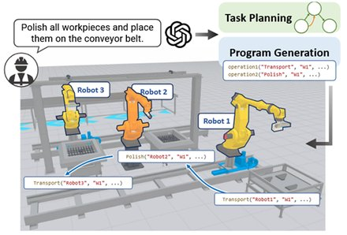
IMR-LLM: Industrial Multi-Robot Task Planning and Program Generation using Large Language Models
Xiangyu Su, Juzhan Xu, Oliver van Kaick, Wenping Deng, Kai Xu*, Ruizhen Hu*
ICRA 2026
Industrial multi-robot collaboration faces challenges due to strict sequential constraints and complex dependencies. We propose the IMR-LLM framework, which uses LLMs to auto-formulate the task scheduling problem and generate efficient high-level task plans. The framework also guides LLMs to produce low-level executable programs via process trees.
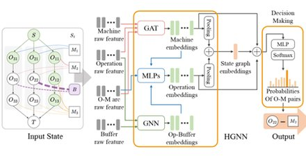
Learning Flexible Job Shop Scheduling under Limited Buffers and Material Kitting Constraints
Shishun Zhang, Juzhan Xu, Yidan Fan, Chenyang Zhu, Ruizhen Hu, Yongjun Wang, Kai Xu*
ICRA 2026
In this work, we study an industrially practical problem — the Flexible Job Shop Scheduling Problem with Limited Buffers and Material Kitting.
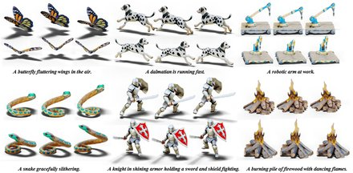
TextMesh4D: Zero-shot Text-to-4D Mesh Generation
Sisi Dai, Xinxin Su, Kai Xu*
ICML 2026
We explore zero-shot text-to-4D mesh generation by introducing TextMesh4D, the first zero-shot framework for text-to-4D that directly generates dynamic meshes by addressing the above challenge at two complementary levels.
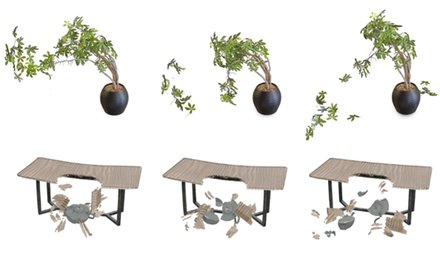
Fracture-GS: Dynamic Fracture Simulation with Physics-Integrated Gaussian Splatting
Xiaogang Wang, Hongyu Wu, Wenfeng Song, Kai Xu*
ICLR 2026
A unified framework that, by integrating an enhanced Collision Material Point Method and a fracture-aware 3D Gaussian representation, enables physically accurate simulation and rendering of dynamic fracture in extreme collisions from multi-view images, overcoming the non-physical artifacts of prior methods.

RoboBPP: Benchmarking Robotic Online Bin Packing with Physics-based Simulation
Zhoufeng Wang, Hang Zhao, Juzhan Xu, Shishun Zhang, Zeyu Xiong, Ruizhen Hu, Chenyang Zhu, Zecui Zeng, Kai Xu*
Submitted, 2026
The paper introduces RoboBPP, a physics-based benchmarking system for robotic online bin packing that uses realistic simulation, industrial datasets, and extended metrics to evaluate the physical feasibility and safety of packing algorithms. RoboBPP provides a standardized, open-source framework complete with visualization tools and an online leaderboard, establishing a reproducible foundation to advance research in physically feasible robotic packing.
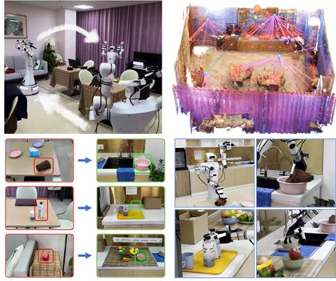
LLM-enhanced Scene Graph Learning for Household Rearrangement
Wenhao Li, Shilong Zou, Zhiyuan Yu, Zheng Zhou, Wenxuan Li, Chenyang Zhu*, Ruizhen Hu*, Kai Xu*
ACM Transactions on Graphics (to be presented at SIGGRAPH 2026)
The paper introduces an LLM-enhanced affordance enhanced graph (AEG) for encoding context-aware object functionality aligned with user preferences. We propose an LLM-assisted framework for efficient misplacement detection and correct placement determination, and implements a real-robot planning system for end-to-end autonomous rearrangement in novel indoor scenes. We also establishe the first benchmark for house-level preference-aligned scene rearrangement with human-annotated rankings and demonstrates SOTA performance on this benchmark.
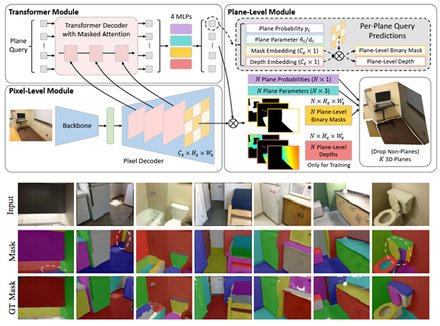
PlaneRecTR++: Unified Query Learning for Joint 3D Planar Reconstruction and Pose Estimation
Jingjia Shi, Shuaifeng Zhi, Kai Xu*
IEEE Transactions on Pattern Analysis and Machine Intelligence (TPAMI), 2026
PlaneRecTR++ is a novel Transformer-based model that unifies multi-view planar reconstruction and camera pose estimation into a single-stage framework, overcoming the limitations of prior sequential, multi-stage approaches. This unified approach enables direct, end-to-end learning of plane correspondences and camera poses, achieving state-of-the-art reconstruction results without the need for separate correspondence supervision.
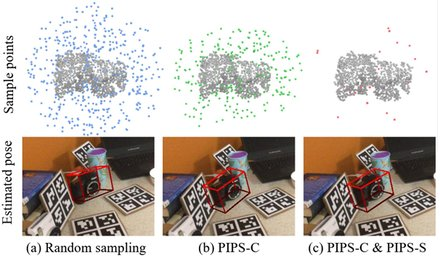
Learning Positive-Incentive Point Sampling in Neural Implicit Fields for Object Pose Estimation
Yifei Shi, Boyan Wan, Xin Xu, Kai Xu*
IEEE Transactions on Pattern Analysis and Machine Intelligence (TPAMI), 2026
A novel method to improve neural implicit fields for 3D object pose estimation by combining an SO(3)-equivariant network, which provides robust spatial reasoning, with an adaptive point sampling strategy that focuses learning on the most informative regions.
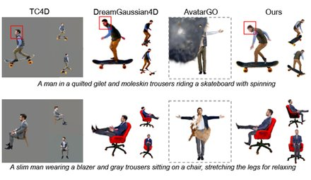
AnchorHOI: Zero-shot Generation of 4D Human-Object Interaction via Anchor-based Prior Distillation
Sisi Dai, Kai Xu*
AAAI 2026
AnchorHOI is a novel framework for 4D human-object interaction generation that introduces an anchor-based prior distillation strategy, leveraging video diffusion models and constructing interaction-aware anchor NeRFs and keypoints to guide tractable, high-quality motion and composition synthesis.
2025
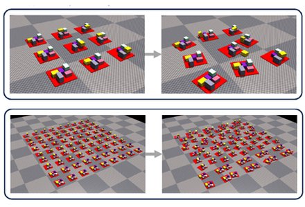
Deliberate Planning of 3D Bin Packing on Packing Configuration Trees
Hang Zhao, Juzhan Xu, Kexiong Yu, Ruizhen Hu, Chenyang Zhu, Bo Du, Kai Xu*
International Journal of Robotics Research (IJRR), 2025
We propose a novel hierarchical representation for online 3D bin packing—packing configuration tree (PCT), a full-fledged description of the state and action space of 3D-BPP. We discover the potential of PCT as tree-based planners in deliberately solving packing problems of industrial significance, including large-scale packing and different variations of the BPP setting.
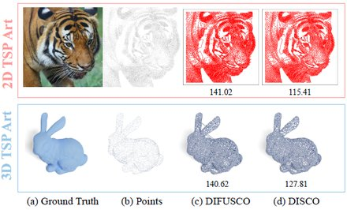
DISCO: Efficient Diffusion Solver for Large-Scale Combinatorial Optimization Problems
Hang Zhao, Kexiong Yu, Yuhang Huang, Renjiao Yi, Chenyang Zhu*, Kai Xu*
Graphical Models (CAD/Graphics 2025 Best Paper Award)
1) DISCO enhances solution quality by constraining the sampling space to a more meaningful domain guided by solution residues. 2) It accelerates the denoising process through an analytically solvable approach, enabling solution sampling with very few reverse-time steps.

LaDi-WM: A Latent Diffusion-Based World Model for Predictive Manipulation
Yuhang Huang, Jiazhao Zhang, Shilong Zou, Xinwang Liu, Ruizhen Hu*, Kai Xu*
CoRL 2025
LaDi-WM is a world model that predicts the latent space of future states using diffusion modeling. Specifically, LaDi-WM leverages the well-established latent space aligned with pre-trained Visual Foundation Models (VFMs), which comprises both geometric features (DINO-based) and semantic features (CLIP-based). We find that predicting the evolution of the latent space is easier to learn and more generalizable than directly predicting pixel-level images.

RemixFusion: Residual-based Mixed Representation for Large-scale Online RGB-D Reconstruction
Yuqing Lan, Chenyang Zhu, Shuaifeng Zhi, Jiazhao Zhang, Zhoufeng Wang, Renjiao Yi, Yijie Wang*, Kai Xu*
ACM Transactions on Graphics (to be presented at SIGGRAPH Asia 2025)
RemixFusion is a residual-based mixed representation for scene reconstruction and camera pose estimation dedicated to high-quality and large-scale online RGB-D reconstruction.
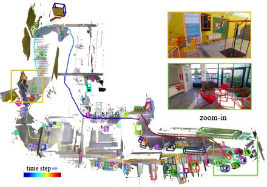
BoxFusion: Reconstruction-Free Open-Vocabulary 3D Object Detection via Real-Time Multi-View Box Fusion
Yuqing Lan, Chenyang Zhu, Zhirui Gao, Jiazhao Zhang, Yihan Cao, Renjiao Yi, Yijie Wang, Kai Xu
Computer Graphics Forum (PG 2025)
BoxFusion is a reconstruction-free online framework for open-vocabulary 3D object detection that fuses 2D detections from a pre-trained visual fundation model across multiple views into unified 3D boxes via correspondence matching and IoU-guided optimization. It enables real-time performance and achieves SOTA without needing expensive dense 3D reconstruction.

CogNav: Cognitive Process Modeling for Object Goal Navigation with LLMs
Yihan Cao, Jiazhao Zhang, Zhinan Yu, Shuzhen Liu, Zheng Qin, Qin Zou, Bo Du, Kai Xu*
ICCV 2025
Object goal navigation (ObjectNav) involves both perceptual and cognitive processes. Inspired by neuroscientific findings that humans maintain and dynamically update fine-grained cognitive states during object search tasks in novel environments, we propose CogNav to model this cognitive process using Large Language Models. CogNav improves the success rate of ObjectNav over SOTAs at least by relative 14% on the HM3D, MP3D, and RoboTHOR benchmarks.
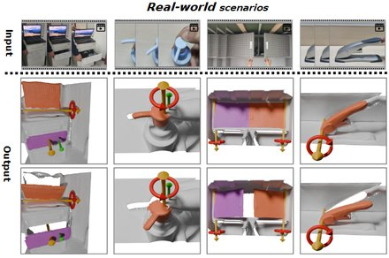
MonoMobility: Zero-Shot 3D Mobility Analysis from Monocular Videos
Hongyi Zhou, Xiaogang Wang, Yulan Guo, Kai Xu*
ICCV 2025
Mobility analysis is crucial for enabling embodied manipulations in real-world scenes of an intelligent agent. Existing methods often rely on dense multi-view inputs or part-level annotations. We propose a novel method that is able to analyze 3D mobility of objects from monocular videos in a zero-shot manner based on 2D Gaussian representation and an end-to-end optimization process of motion parameters using frame-to-frame losses.
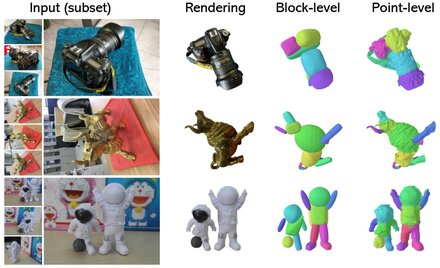
Self-supervised Learning of Hybrid Part-aware 3D Representation of 2D Gaussians and Superquadrics
Zhirui Gao, Renjiao Yi, Yuhang Huang, Wei Chen, Chenyang Zhu, Kai Xu*
ICCV 2025
We introduce PartGS, a self-supervised part-aware reconstruction framework that integrates 2D Gaussians and superquadrics to parse objects and scenes into an interpretable decomposition, leveraging multi-view image inputs to uncover 3D structural information.
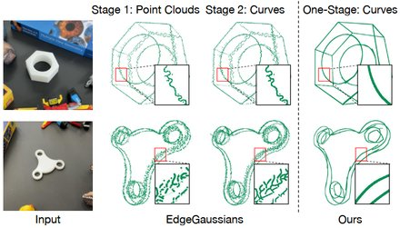
Curve-Aware Gaussian Splatting for 3D Parametric Curve Reconstruction
Zhirui Gao, Renjiao Yi, Yaqiao Dai, Xuening Zhu, Wei Chen, Chenyang Zhu*, Kai Xu*
ICCV 2025
We present an end-to-end method for reconstructing 3D parametric curves directly from multi-view edge maps. Contrasting with the existing reconstruct-and-fit pipelines, our one-stage approach optimizes 3D parametric curves directly from 2D edge maps.

PIN-WM: Learning Physics-INformed World Models for Non-Prehensile Manipulation
Wenxuan Li, Hang Zhao, Zhiyuan Yu, Yu Du, Qin Zou, Ruizhen Hu, Kai Xu
Robotics: Science and Systems (RSS) 2025
PIN-WM is a Physics-INformed World Model that efficiently identifies physical parameters for rigid bodies from visual observations, serving as an interactive environment for deployable policy learning. It leverages differentiable physics and rendering to achieve system identification with minimal task-agnostic interactions, encompassing mass, friction, restitution, and moment of inertia. To bridge gaps between the identified model and the target domain, we introduce Identified Digital Cousins, which perturbs physics and rendering parameters to generate diverse, meaningful variations for enhancing policy transfer.

Designing Pin-pression Gripper and Learning its Dexterous Grasping with Online In-hand Adjustment
Hewen Xiao, Xiuping Liu, Hang Zhao, Jian Liu, Kai Xu
SIGGRAPH 2025 (ACM Transactions on Graphics)
We introduce a novel design of parallel-jaw grippers drawing inspiration from pin-pression toys. The gripper features a distinctive mechanism in which each finger integrates a 2D array of pins capable of independent extension and retraction, allowing it to instantaneously customize its finger’s shape to conform to the object being grasped by dynamically adjusting the extension/retraction of the pins. It achieves in-hand re-orientation via dynamically adjusting the pins. To learn the dynamic grasping skills of pin-pression grippers, we devise a dedicated reinforcement learning algorithm with careful designs of state representation and reward shaping.
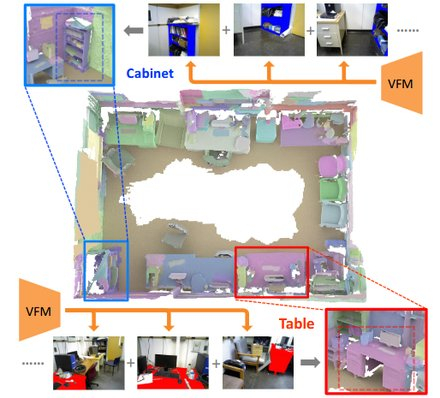
OnlineAnySeg: Online Zero-Shot 3D Segmentation by Visual Foundation Model Guided 2D Mask Merging
Yijie Tang, Jiazhao Zhang, Yuqing Lan, Yulan Guo, Dezun Dong, Chenyang Zhu, Kai Xu*
CVPR 2025
With the success of visual foundation models (VFMs), leveraging 2D priors to address 3D online segmentation has become popular. To lift the segmentations by 2D priors into final 3D segmentations, spatial consistency is needed whereby identifying spatial overlap among 2D masks is essential — yet existing methods rarely achieve that in real time. To achieve online 3D open-vocabulary segmentation during real-time scene reconstruction, we propose a fast method of 2D masks lifting by using voxel hashing for efficient 3D scene querying, reducing the time complexity of spatial overlap queries from O(n^2) to O(n).
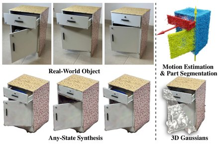
ArticulatedGS: Self-supervised Digital Twin Modeling of Articulated Objects using 3D Gaussian Splatting
Junfu Guo, Yu Xin, Gaoyi Liu, Kai Xu, Ligang Liu, Ruizhen Hu
CVPR 2025
We tackle the challenge of concurrent reconstruction at the part level with the RGB appearance and estimation of motion parameters for building digital twins of articulated objects using 3D Gaussian Splatting. Our approach decoupled multiple highly interdependent parameters through a multi-step optimization process, achieving stable optimization and high-quality outcomes.
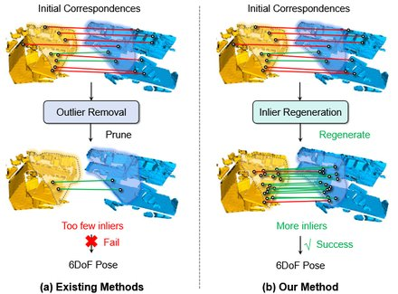
Progressive Correspondence Regenerator for Robust 3D Registration
Guiyu Zhao, Sheng Ao, Ye Zhang, Kai Xu, Yulan Guo
CVPR 2025
Obtaining enough high-quality correspondences is crucial for robust registration. Existing correspondence refinement methods mostly follow the paradigm of outlier removal, which either fails to correctly identify the accurate correspondences under extreme outlier ratios, or select too few correct correspondences to support robust registration. To address this challenge, we propose a novel approach named Regor, which is a progressive correspondence regenerator that generates higher-quality matches whist sufficiently robust for numerous outliers.
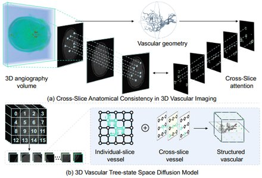
VasTSD: Learning 3D Vascular Tree-state Space Diffusion Model for Angiography Synthesis
Zhifeng Wang, Renjiao Yi, Xin Wen, Chenyang Zhu, Kai Xu*
CVPR 2025
Angiographic images can effectively assist in the diagnosis of vascular diseases. However, contrast agents may bring extra radiation exposure which is harmful to patients with health risks. To mitigate the concern, we aim to automatically generate angiography from non-angiographic inputs, by leveraging and enhancing the inherent physical properties of vascular structures.
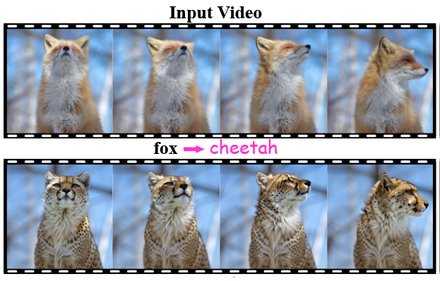
VideoDirector: Precise Video Editing via Text-to-Video Models
Yukun Wang, Longguang Wang, Zhiyuan Ma, Qibin Hu, Kai Xu, Yulan Guo
CVPR 2025
Despite text-to-image (T2I) with the inversion-then-editing paradigm has demonstrated promising results, directly extending it to text-to-video still suffers severe artifacts. Current video editing methods primarily rely on T2I models, which inherently lack temporal-coherence generative ability. We propose a spatial-temporal decoupled guidance and multi-frame null-text optimization strategy to provide pivotal temporal cues for more precise pivotal inversion.
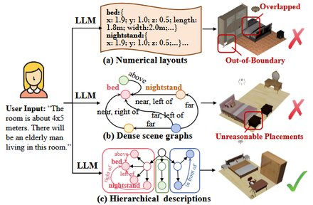
Hierarchically-Structured Open-Vocabulary Indoor Scene Synthesis with Pre-trained Large Language Model
Weilin Sun, Xinran Li, Manyi Li, Kai Xu, Xiangxu Meng, Lei Meng
AAAI 2025
We propose to generate hierarchically structured scene descriptions with LLM and then compute the scene layouts -- We train a hierarchy-aware network to infer the fine-grained relative positions between objects and design a divide-and-conquer optimization to solve for scene layouts. It generates reasonable scene layouts with better alignment with the user requirements.
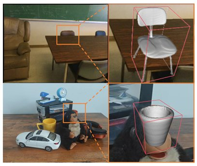
Equivariant Diffusion Model with A5-Group Neurons for Joint Pose Estimation and Shape Reconstruction
Boyan Wan, Yifei Shi, Xiaohong Chen, Kai Xu*
IEEE Transactions on Pattern Analysis and Machine Intelligence (TPAMI). 2025
We advocate the use of diffusion models for joint estimation of category-level object poses and reconstruction of object geometry. Diffusion models formulate shape reconstruction as a generation process conditioned on input observations: 1) The iterative inference of diffusion models provides a mechanism for iterative optimization for both pose estimation and shape reconstruction. 2) Diffusion models allow multiple outputs starting from different input noises, which would address the problem of ambiguity caused by partial observations.
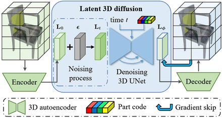
Part-aware Shape Generation with Latent 3D Diffusion of Neural Voxel Fields
Yuhang Huang, Shilong Zou, Xinwang Liu, Kai Xu*
IEEE Transactions on Visualization and Computer Graphics (TVCG). 2025
We present a novel latent 3D diffusion model for generating neural voxel fields with precise partaware structures and high-quality textures.
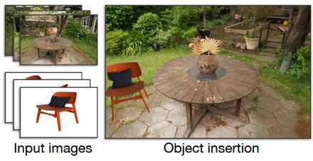
Relighting Scenes with Object Insertions in Neural Radiance Fields
Xuening Zhu, Renjiao Yi, Xin Wen, Chenyang Zhu, Kai Xu*
IEEE Transactions on Circuits and Systems for Video Technology (TCSVT). 2025
(Xuening and Renjiao are joint first authors)
A novel NeRF-based pipeline for inserting object NeRFs into scene NeRFs, enabling realistic relighting and shadow casting, from multi-view images of the object and the scene.
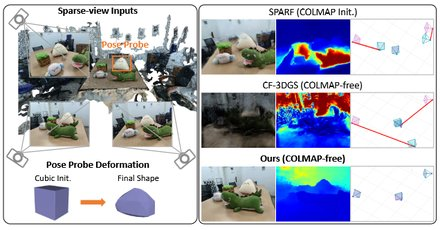
Generic Objects as Pose Probes for Few-shot View Synthesis
Zhirui Gao, Renjiao Yi*, Chenyang Zhu, Ke Zhuang, Wei Chen, Kai Xu*
IEEE Transactions on Circuits and Systems for Video Technology (TCSVT). 2025
We propose to utilize everyday objects, commonly found in both images and real life, as "pose probes" to tackle few-view (3~6 unposed images) NeRF reconstruction.
2024

LLM-enhanced Scene Graph Learning for Household Rearrangement
Wenhao Li, Zhiyuan Yu, Qijin She, Zhinan Yu, Yuqing Lan, Chenyang Zhu, Ruizhen Hu, Kai Xu*
SIGGRAPH Asia 2024
The household rearrangement involves both common-sense knowledge on the objective side and human user preference on the subjective side. We propose to mine object functionality with user preference alignment directly from the scene itself through LLM-enhanced scene graph learning which transforms the input scene graph into an affordance-enhanced graph with information-enhanced nodes and newly discovered edges.
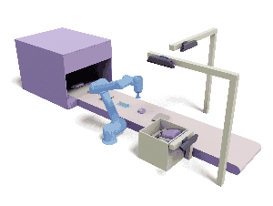
Learning Physically Realizable Skills for Online Packing of General 3D Shapes
Hang Zhao, Zherong Pan, Yang Yu, Kai Xu*
ACM Transactions on Graphics (presented at SIGGRAPH 2024)
We study the problem of learning online packing skills for irregular 3D shapes where we take physical realizability into account, involving physics dynamics and constraints of a placement. The complex irregular geometry and imperfect object placement together lead to huge solution space. Direct training in such space is prohibitive. We propose a theoretically-provable method for candidate action generation to reduce the action space of RL and the learning burden.
Learning Cross-hand Policies for High-DOF Reaching and Grasping
Qijin She, Shishun Zhang, Yunfan Ye, Ruizhen Hu, Kai Xu*
ECCV 2024
We propose a method that can learn a unified reaching-and-grasping policy that can be easily transferred to different dexterous grippers, based on the IBS representation of dynamic grasping. We adopt a decoupled learning scheme: 1) a gripper-agnostic policy model that predicts the displacements of pre-defined key points on the gripper, and 2) a gripper-specific adaptation model that translates these displacements into adjustments for controlling the grippers' joints.
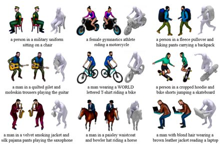
InterFusion: Text-Driven Generation of 3D Human-Object Interaction
Sisi Dai, Wenhao Li, Haowen Sun, Haibin Huang, Chongyang Ma, Hui Huang, Kai Xu*, Ruizhen Hu
ECCV 2024
We tackle the generating 3D human-object interactions from textual descriptions in a zero-shot text-to-3D manner. We address two key challenges: the unsatisfactory outcomes of direct text-to-3D methods in HOI, largely due to the lack of paired text-interaction data, and the inherent difficulties in simultaneously generating multiple concepts with complex spatial relationships.
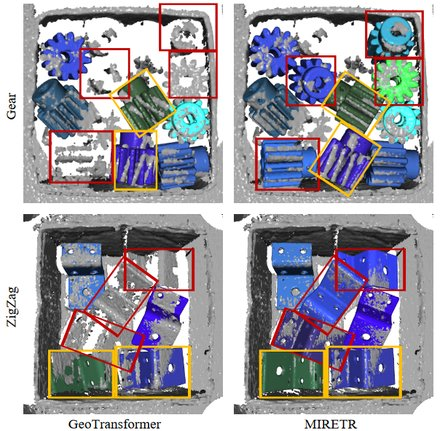
Learning Instance-Aware Correspondences for Robust Multi-Instance Point Cloud Registration in Cluttered Scenes
Zhiyuan Yu, Zheng Qin, Lintao Zheng, Kai Xu*
CVPR 2024
Multi-instance point cloud registration estimates the poses of multiple instances of a model point cloud in a scene point cloud. We propose MIRETR, Multi-Instance REgistration TRansformer, a coarse-to-fine approach to the extraction of instance-aware correspondences. At the coarse level, it jointly learns instance-aware superpoint features and predicts per-instance masks. With instance masks, the influence from outside of the instance being concerned is minimized, such that highly reliable superpoint correspondences can be extracted.
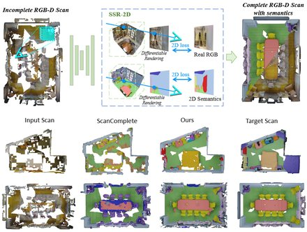
SSR-2D: Semantic 3D Scene Reconstruction from 2D Images
Junwen Huang, Alexey Artemov, Yujin Chen, Shuaifeng Zhi, Kai Xu, Matthias Nießner
IEEE Transactions on Pattern Analysis and Machine Intelligence (TPAMI), 2024
We explore a central 3D scene modeling task, namely, semantic scene reconstruction without using any 3D annotations. The key idea of our approach is to design a trainable model that employs both incomplete 3D reconstructions and their corresponding source RGB-D images, fusing cross-domain features into volumetric embeddings to predict complete 3D geometry, color, and semantics with only 2D labeling which can be either manual or machine-generated.
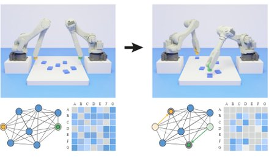
Synchronized Dual-arm Rearrangement via Cooperative mTSP
Wenhao Li, Shishun Zhang, Sisi Dai, Hui Huang, Ruizhen Hu, Xiaohong Chen, Kai Xu*
ICRA 2024
We formulated the problem of synchronized dual-arm rearrangement as cooperative mTSP, a variant of mTSP where agents share cooperative costs, and utilized reinforcement learning for its solution. We devise an attention-based network working on task state graph for task scheduling.
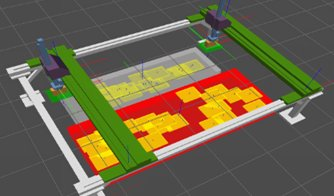
Learning Dual-arm Object Rearrangement for Cartesian Robots
Shishun Zhang, Qijin She, Wenhao Li, Chenyang Zhu, Yongjun Wang, Ruizhen Hu, Kai Xu*
ICRA 2024
This work focuses on the dual-arm object rearrangement problem abstracted from a realistic industrial scenario of Cartesian robots. The goal of this problem is to transfer all the objects from sources to targets with the minimum total completion time.
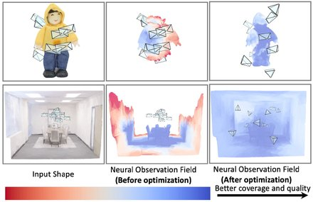
Neural Observation Field Guided Hybrid Optimization of Camera Placement
Yihan Cao, Jiazhao Zhang, Zhinan Yu, Kai Xu*
The IEEE Robotics and Automation Letters, 2024
Camera placement is crutial in multi-camera systems. Its challenge lies in the nonlinear nature of high-dim parameters and the unavailability of gradients for target functions like coverage and visibility. We present a hybrid method incorporating both gradient-based and non-gradient-based optimizations, enjoying the advantages of both smooth convergence and robustness.
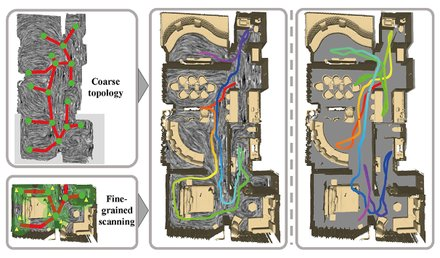
THP: Tensor-field-driven Hierarchical Path Planning for Autonomous Scene Exploration with Depth Sensors
Yuefeng Xi, Chenyang Zhu*, Yao Duan, Renjiao Yi, Lintao Zheng, Hongjun He, Kai Xu*
Computational Visual Media, 2024
We introduce THP, a tensor field-based framework for environment exploration which can better utilize the encoded depth information through the geometric characteristics of tensor fields. A tensor field guides the robot for optimal global exploration and collision-free local movements.
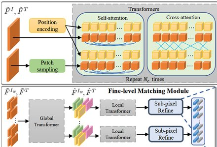
Learning Accurate Template Matching with Differentiable Coarse-to-Fine Correspondence Refinement
Zhirui Gao, Renjiao Yi, Zheng Qin, Yunfan Ye, Chenyang Zhu, Kai Xu*
Computational Visual Media, 2024
Template matching is a fundamental task in computer vision and has been studied for decades. We propose an accurate template matching method based on differentiable coarse-to-fine correspondence refinement. We use an edge-aware module to overcome the domain gap between the mask template and the grayscale image, allowing robust matching.
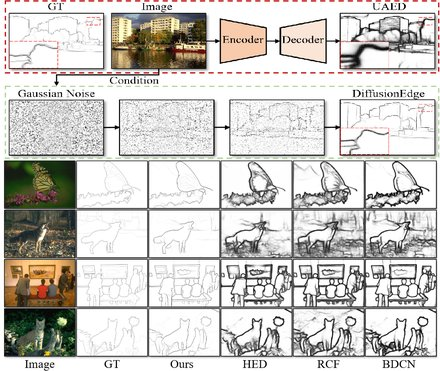
DiffusionEdge: Diffusion Probabilistic Model for Crisp Edge Detection
Yunfan Ye, Kai Xu*, Yuhang Huang, Renjiao Yi, Zhiping Cai
AAAI 2024
We propose the first diffusion model for the task of general edge detection, which we call DiffusionEdge. To avoid expensive computational resources while retaining the generation performance, we apply our recently proposed diffusion model ADM in the latent space and enable the classic cross-entropy loss which is uncertainty-aware in pixel level to directly optimize the parameters in latent space in a distillation manner. We also adopt a decoupled architecture to speed up the denoising process and propose a corresponding adaptive Fourier filter to adjust the latent features of specific frequencies.
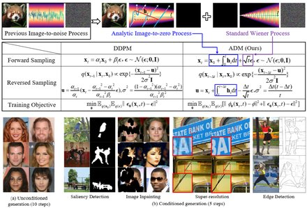
Simultaneous Image-to-Zero and Zero-to-Noise: Diffusion Models with Analytical Image Attenuation
Yuhang Huang, Zheng Qin, Xinwang Liu, Kai Xu*
arXiv:2306.13720
We propose an extrememly powerful diffusion model ADM. ADM turns the forward image-to-noise mapping into image-to-zero mapping and zero-to-noise mapping. It achieves high-quality results in several generative tasks with much less diffusion steps, thus greatly improving the generation speed. PLEASE TRY IT!
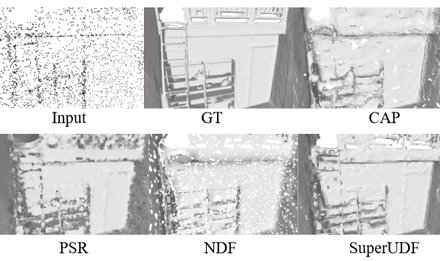
SuperUDF: Self-supervised UDF Estimation for Surface Reconstruction
Hui Tian, Chenyang Zhu, Yifei Shi, Kai Xu*
IEEE Transactions on Visualization and Computer Graphics (TVCG), 2024
SuperUDF is a self-supervised UDF learning which exploits a learned geometry prior for efficient training and a novel regularization for robustness to sparse sampling. The core idea draws inspiration from the classical surface approximation operator of locally optimal projection (LOP).
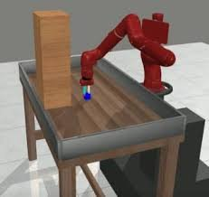
Deep Demonstration Tracing: Learning Generalizable Imitator Policy for Runtime Imitation from a Single Demonstration
Xiong-Hui Chen, Junyin Ye, Hang Zhao, Yi-Chen Li, Xu-Hui Liu, Haoran Shi, Yu-Yan Xu, Zhihao Ye, Si-Hang Yang, Yang Yu, Anqi Huang, Kai Xu, Zongzhang Zhang
ICML 2024
One-shot imitation learning (OSIL) is to learn an imitator agent that can execute multiple tasks with only a single demonstration. In real-world scenario, the environment is dynamic, e.g., unexpected changes can occur after demonstration. Thus, achieving generalization of the imitator agent is crucial as agents would inevitably face situations unseen in the provided demonstrations. We present Deep Demonstration Tracing (DDT), a demonstration transformer architecture to encourage agents to adaptively trace suitable states in demonstrations.
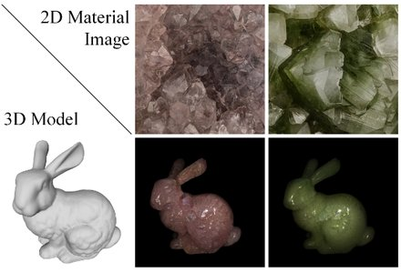
Learning to Transfer Heterogeneous Translucent Materials from a 2D Image to 3D Models
Xiaogang Wang, Yuhang Cheng, Ziyang Fan, Kai Xu
ACM Multimedia 2024
Great progress has been made in rendering translucent materials in recent years, but automatically estimating parameters for heterogeneous materials such as jade and human skin remains a challenging task, often requiring specialized and expensive physical measurement devices. In this paper, we present a novel approach for estimating and transferring the parameters of heterogeneous translucent materials from a single 2D image to 3D models.
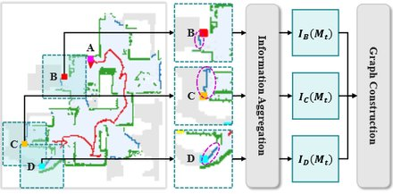
CSO: Constraint-guided Space Optimization for Active Scene Mapping
Xuefeng Yin, Chenyang Zhu, Shanglai Qu, Yuqi Li, Kai Xu, Baocai Yin, Xin Yang
ACM Multimedia 2024
Simultaneously mapping and exploring a complex unknown scene is an NP-hard problem. We present CSO, a deep reinforcement learning-based framework for efficient active scene mapping.
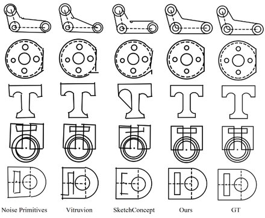
Parametric Primitive Analysis of CAD Sketches With Vision Transformer
Xiaogang Wang, Liang Wang, Hongyu Wu, Guoqiang Xiao, Kai Xu*
IEEE Transactions on Industrial Informatics, 2024
The interpretation of CAD sketches plays a crucial role in industrial product design. To address the error accumulation in autoregressive models and the complexities associated with self-supervised model design, we propose a two-stage network framework. It consists of a primitive network and a constraint network, transforming the sketch analysis task into a set prediction problem to enhance the effective handling of primitives and constraints. By decoupling target types from parameters, it gains increased flexibility and optimality while reducing complexity.
2023
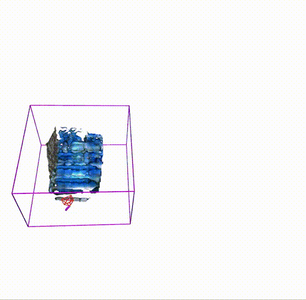
MIPS-Fusion: Multi-Implicit-Submaps for Scalable and Robust Online Neural RGB-D Reconstruction
Yijie Tang, Jiazhao Zhang, Zhinan Yu, He Wang, Kai Xu*
ACM Transactions on Graphics (SIGGRAPH Asia 2023)
42(6). [ | | Code & data
We introduce MIPS-Fusion, a robust and scalable online RGB-D reconstruction method based on a novel neural implicit representation – multi-implicit-submap. Neural submaps are allocated incrementally alongside the scanning trajectory, learned efficiently with local bundle adjustments, refined distributively in a back-end optimization, and optimized globally in realizing submap-level loop closure. We also propose a hybrid tracking approach combining randomized and gradient-based pose optimizations. For the first time, randomized optimization is made possible in neural tracking with several key designs to the learning process, enabling efficient and robust tracking even under fast camera motions.
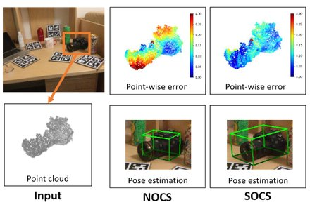
SOCS: Semantically-aware Object Coordinate Space for Category-Level 6D Object Pose Estimation under Large Shape Variations
Boyan Wan, Yifei Shi, Kai Xu*
ICCV 2023
We propose SOCS for category-level 6D pose estimation. SOCS is semantically coherent: Any point on the surface of a object can be mapped to a semantically meaningful location in SOCS, allowing for accurate pose and size estimation under large shape variations. Our method is well-generalizing for large intra-category shape variations and robust to inter-object occlusions
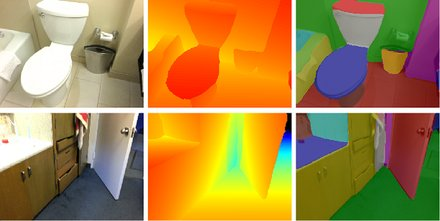
PlaneRecTR: Unified Query learning for 3D Plane Recovery from a Single View
Jingjia Shi, Shuaifeng Zhi, Kai Xu*
ICCV 2023
/
PlaneRecTR is a vision transformer architecture with query-based learning, and for the first time unifies all subtasks of single-view plane recovery with a single compact model. Mutual benefits between planar geometry and segmentation lead to SOTA performance.
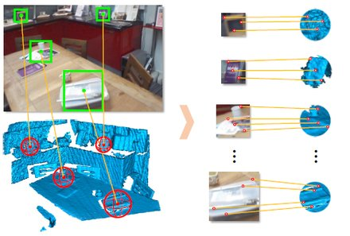
2D3D-MATR: 2D-3D Matching Transformer for Detection-free Registration between Images and Point Clouds
Minhao Li, Zheng Qin, Zhirui Gao, Renjiao Yi, Chenyang Zhu, Yulan Guo, Kai Xu*
ICCV 2023
The commonly adopted detect-then-match approach to registration finds difficulties in the cross-modality cases due to the incompatible keypoint detection and inconsistent feature description. We propose, 2D3D-MATR, a detection-free method for accurate and robust registration between images and point clouds.
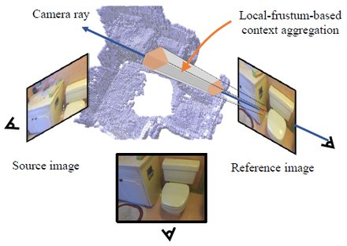
RayMVSNet++: Learning Ray-based 1D Implicit Fields for Accurate Multi-View Stereo
Yifei Shi, Junhua Xi, Dewen Hu, Zhiping Cai, Kai Xu*
IEEE Transactions on Pattern Analysis and Machine Intelligence (TPAMI)
This is an enhancement of our RayMVSNet paper with contextual feature aggregation for each ray. We leverage an attentional gating unit for selecting semantically relevant neighboring rays within the local frustum around a ray. It improves the performance on more challenging datasets (e.g. low-quality images caused by poor lighting conditions or motion blur).
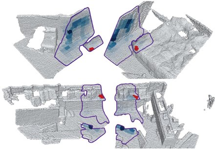
GeoTransformer: Fast and Robust Point Cloud Registration with Geometric Transformer
Zheng Qin, Hao Yu, Changjian Wang, Yulan Guo, Yuxing Peng, Slobodan Ilic, Dewen Hu*, Kai Xu*
IEEE Transactions on Pattern Analysis and Machine Intelligence (TPAMI)
This is the journal extension of our CVPR 2022 paper with 1) significantly reduced (17%) memory footprint and computational cost, 2) handling of non-rigid registration, and 3) more thorough evaluations and in-depth analysis.
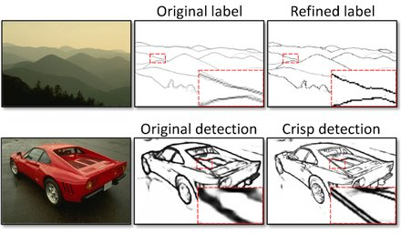
Delving into Crispness: Guided Label Refinement for Crisp Edge Detection
Yunfan Ye, Renjiao Yi, Zhirui Gao, Zhiping Cai*, Kai Xu*
IEEE Transactions on Image Processing (TIP)
We find that label quality is more important than model design to achieving crisp edge detection. We propose an iterative Canny-guided refinement of human-labeled edges whose result can be used to train crisp edge detectors.
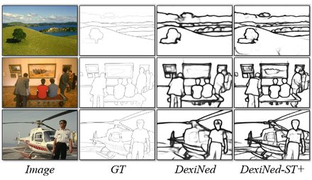
STEdge: Self-training Edge Detection with Multi-layer Teaching and Regularization
Yunfan Ye, Renjiao Yi, Zhiping Cai*, Kai Xu*
IEEE Transactions on Neural Networks and Learning Systems (TNNLS)
We propose self-training edge detection, leveraging the untapped wealth of large-scale unlabeled image datasets. We design a self-supervised framework which achieves significant performance boost over supervised methods with lightweight finetuning on the target dataset.
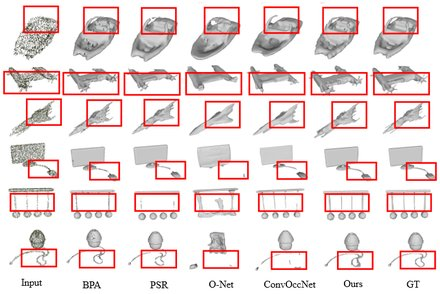
Tensorformer: Normalized Matrix Attention Transformer for High-quality Point Cloud Reconstruction
Hui Tian, Zheng Qin, Renjiao Yi, Chenyang Zhu, Kai Xu*
IEEE Transactions on Multimedia (TMM)
Transformer-based methods to point cloud reconstruction can work without normals but without rich local details. We introduce a novel normalized matrix attention transformer, Tensorformer. It allows for simultaneous point-wise and channel-wise message passing. It brings more degrees of freedom in feature learning and thus facilitates better modeling of local geometric details.
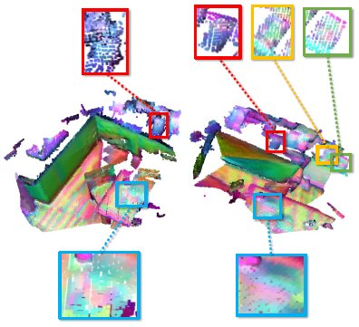
CasViGE: Learning robust point cloud registration with cascaded visual-geometric encoding
Zheng Qin, Changjian Wang, Yuxing Peng, Kai Xu*
Computer Aided Geometric Design (CAGD)
Volume 104, 2023
Recent methods to point cloud registration attempt to inject the visual information from RGB images to obtain more accurate correspondences. However, as 2D and 3D convolutions have different inductive biases, this simplistic method ignores the intrinsic correlation between the two modalities, which harms the distinctiveness of the point descriptors. CasViGE iteratively fuses the inter-modality features by leveraging the inductive biases of both 2D and 3D convolutions, which better considers the correlation between the two modalities. As a plug-and-play module, it attains significant improvements on various registration methods.
NEF: Neural Edge Fields for 3D Parametric Curve Reconstruction from Multi-view Images
Yunfan Ye, Renjiao Yi, Zhirui Gao, Chenyang Zhu, Zhiping Cai, Kai Xu*
CVPR 2023
We study the problem of reconstructing 3D feature curves of an object from a set of calibrated multi-view images. To do so, we learn a neural implicit field representing the density distribution of 3D edges which we refer to as Neural Edge Field (NEF). Inspired by NeRF, NEF is optimized with a view-based rendering loss where a 2D edge map is rendered at a given view and is compared to the ground-truth edge map extracted from the image of that view.
Deep Graph-based Spatial Consistency for Robust Non-rigid Point Cloud Registration
Zheng Qin, Hao Yu, Changjian Wang, Yuxing Peng, Kai Xu*
CVPR 2023
We study the problem of outlier correspondence pruning for non-rigid point cloud registration. We propose Graph-based Spatial Consistency Network (GraphSCNet) to filter outliers for non-rigid registration. Our method is based on the fact that non-rigid deformations are usually locally rigid, or local shape preserving.
Self-supervised Non-Lambertian Single-view Image Relighting
Renjiao Yi, Chenyang Zhu, Kai Xu*
CVPR 2023
We present a learning-based approach to relighting a single image of non-Lambertian objects involving both inverse rendering and re-rendering. We propose a self-supervised method for inverse rendering with a low-rank constraint. To facilitate the learning, we contribute Relit, a large-scale dataset of videos with aligned objects under changing illuminations.
3D-Aware Object Goal Navigation via Simultaneous Exploration and Identification
Jiazhao Zhang, Liu Dai, Fanpeng Meng, Qingnan Fan, Xuelin Chen, Kai Xu, He Wang
CVPR 2023
We propose a framework for the challenging 3D-aware ObjectNav based on two straightforward sub-policies. The two sub-polices, namely corner-guided exploration policy and category-aware identification policy, simultaneously perform by utilizing online fused 3D points as observation.
BUFFER: Balancing Accuracy, Efficiency, and Generalizability in Point Cloud Registration
Sheng Ao, Qingyong Hu, Hanyun Wang, Kai Xu, Yulan Guo
CVPR 2023
An ideal point cloud registration framework should have superior accuracy, acceptable efficiency, and strong generalizability. We propose BUFFER, a point cloud registration method for balancing accuracy, efficiency, and generalizability. The key is to take advantage of both point-wise and patch-wise techniques, while overcoming the inherent drawbacks simultaneously.
Multi-resolution Monocular Depth Map Fusion by Self-supervised Gradient-based Composition
Yaqiao Dai, Renjiao Yi, Chenyang Zhu, Hongjun He, Kai Xu*
AAAI 2023
Oral presentation
We propose a novel depth map fusion module to combine the advantages of estimations with multi-resolution inputs. Instead of merging the low- and high-resolution estimations equally, we adopt the core idea of Poisson fusion, trying to implant the gradient domain of high-resolution depth into the low-resolution depth.
NIFT: Neural Interaction Field and Template for Object Manipulation
Zeyu Huang, Juzhan Xu, Sisi Dai, Kai Xu, Hao Zhang, Hui Huang, Ruizhen Hu
ICRA 2023
We introduce NIFT, Neural Interaction Field and Template, a descriptive and robust interaction representation of object manipulations to facilitate imitation learning. Given a few object manipulation demos, NIFT guides the generation of the interaction imitation for a new object instance by matching the Neural Interaction Template (NIT) extracted from the demos in the target Neural Interaction Field (NIF) defined for the new object. Specifically, NIF is a neural field that encodes the relationship between each spatial point and a given object.
ASRO-DIO: Active Subspace Random Optimization based Depth Inertial Odometry
Jiazhao Zhang, Yijie Tang, He Wang, Kai Xu*
ICRA 2023
(IEEE T-RO paper track). [ | Code
ASRO-DIO enables real-time RGB-D reconstruction under extremely fast camera motions. To the center of ASRO-DIO is the fast and robust Depth-IMU odometry with efficient active subspace randomized optimization in the 18D state space of IMU tracking.
On Learning the Right Attention Point for Feature Enhancement
Liqiang Lin, Pengdi Huang, Chi-Wing Fu, Kai Xu, Hao Zhang, Hui Huang
Science China (Information Sciences)
2023, 66: 112107
An attention-based mechanism to learn enhanced point features for point cloud processing tasks. Unlike prior studies, which were trained to optimize the weights of a pre-selected set of attention points, our approach learns to locate the best attention points to maximize the performance of a specific task, e.g., point cloud classification. Importantly, we advocate the use of single attention point to facilitate semantic understanding in point feature learning.
2022
Learning High-DOF Reaching-and-Grasping via Dynamic Representation of Gripper-Object Interaction
Qijin She, Ruizhen Hu, Junzhan Xu, Min Liu, Kai Xu*, Hui Huang*
ACM Transactions on Graphics (SIGGRAPH 2022)
We represent a grasp with Interaction Bisector Surface and find that it is surprisingly effective as a state representation since it well informs the fine-grained control of each finger with spatial relation against the target object. It facilitates learning a strong control model of high-DOF grasping with good sample efficiency, dynamic adaptability, and cross-category generality.
ASRO-DIO: Active Subspace Random Optimization based Depth Inertial Odometry
Jiazhao Zhang, Yijie Tang, He Wang, Kai Xu*
IEEE Transactions on Robotics (TRO)
This is an extension of ROSEFusion which enables realtime RGB-D reconstruction under fast camera motion via random optimization. ASRO-DIO achieves robust Depth-IMU odometry and supports even faster camera motion! To realize efficient random optimization in the 18D state space of IMU tracking, we propose to identify and sample particles from active subspace.
Learning to Detect 3D Symmetry from Single-view RGB-D Images with Weak Supervision
Yifei Shi, Xin Xu, Junhua Xi, Xiaochang Hu, Dewen Hu, Kai Xu*
IEEE Transactions on Pattern Analysis and Machine Intelligence (TPAMI)
This is an extension SymmetryNet which detects object-level symmeries from a single-view RGB-D image with strong supervision. In this work, we present a 3D symmetry detection approach to detect symmetry from single-view RGB-D images without using symmetry supervision. The key idea is to train the network in a weakly-supervised learning manner to complete the shape based on the predicted symmetry such that the completed shape be similar to existing plausible shapes.
Learning Efficient Online 3D Bin Packing on Packing Configuration Trees
Hang Zhao, Yang Yu, Kai Xu*
ICLR 2022
We propose to enhance the practical applicability of online 3D-BPP via learning on a novel hierarchical representation - packing configuration tree (PCT). PCT is a full-fledged description of the state and action space of bin packing which can support packing policy learning based on deep reinforcement learning (DRL). In training, PCT expands based on heuristic rules. However, the DRL model learns a much more effective and robust packing policy than heuristics.
Geometric Transformer for Fast and Robust Point Cloud Registration
Zheng Qin, Hao Yu, Changjian Wang, Yulan Guo, Yuxing Peng, Kai Xu*
CVPR 2022, Oral presentation
GeoTransformer encodes distance and angular information of superpoints sampled from point clouds, thus enabling the learning of rotation-invariant representation of global structures. The resultant features leads to high-quality point correspondences. This makes it possible that fast and accurate point cloud registration is achieved in a RANSAC-free manner. Our method attains 17%~31% performance boost on the challenging dataset of 3DLoMatch, with a 100x faster speed.
RIM-Net: Recursive Implicit Fields for Unsupervised Learning of Hierarchical Shape Structures
Chengjie Niu, Manyi Li, Kai Xu*, Hao Zhang
CVPR 2022
We introduce RIM-Net, a neural network which learns recursive implicit fields for unsupervised inference of hierarchical shape structures. Our network recursively decomposes an input 3D shape into two parts, resulting in a binary tree hierarchy. Each level of the tree corresponds to an assembly of shape parts, represented as implicit functions, to reconstruct the input shape.
RayMVSNet: Learning Ray-based 1D Implicit Fields for Accurate Multi-View Stereo
Junhua Xi, Yifei Shi, Yijie Wang, Yulan Guo, Kai Xu*
CVPR 2022
Different from existing works on deep MVS dedicated to adaptive refinement of cost volumes, we opt to directly optimize the depth value along each camera ray, mimicking the range (depth) finding of a laser scanner. This reduces the MVS problem to ray-based depth optimization which is much more light-weight than full cost volume optimization.
DisARM: Displacement Aware Relation Module for 3D Detection
Yao Duan, Chenyang Zhu, Yuqing Lan, Renjiao Yi, Xinwang Liu, Kai Xu*
CVPR 2022
The core idea of DisARM is that contextual information is critical to tell the difference between different objects when the instance geometry is incomplete or featureless. We find that relations between proposals provide a good representation to describe the context. Rather than working with all relations, we find that training with relations only between the most representative ones, or anchors, can significantly boost the detection performance.
Decoupling Makes Weakly Supervised Local Feature Better
Kunhong Li, Longguang Wang, Li Liu, Qing Ran, Kai Xu, Yulan Guo
CVPR 2022
Weakly supervised learning can help local feature methods to overcome the obstacle of acquiring a large-scale dataset with densely labeled correspondences. However, since weak supervision cannot distinguish the losses caused by the detection and description steps, directly conducting weakly supervised learning within a joint training describethen- detect pipeline suffers limited performance. We propose a decoupled training describe-then-detect pipeline tailored for weakly supervised local feature learning, where the detection step is decoupled from the description step and postponed until discriminative and robust descriptors are learned.
Efficient One-pass Multi-view Subspace Clustering with Consensus Anchors
Suyuan Liu, Siwei Wang, Pei Zhang, Xinwang Liu, Kai Xu, Changwang Zhang, Feng Gao
AAAI 2022
We propose a scalable and parameter-free multi-view subspace clustering method to directly output the clustering labels with optimal anchor graph.
Fusion Multiple Kernel K-means
Yi Zhang, Xinwang Liu, Jiyuan Liu, Sisi Dai, Changwang Zhang, Kai Xu, En Zhu
AAAI 2022
It unifies base partition learning and late fusion clustering into one single objective function, and adopts early fusion technique to capture more sufficient information in kernel matrices.
2021
ROSEFusion: Random Optimization for Online Dense Reconstruction under Fast Camera Motion
Jiazhao Zhang, Chenyang Zhu, Lintao Zheng, Kai Xu*
ACM Transactions on Graphics (SIGGRAPH 2021)
Online reconstruction based on RGB-D sequences has thus far been restrained to relatively slow camera motions (<1m /s). Under very fast camera motion (e.g., 3m/s), the reconstruction can easily crumble even for the state-of-the-art methods. Fast motion brings two challenges to depth fusion: 1) the high nonlinearity of camera pose optimization due to large inter-frame rotations and 2) the lack of reliably trackable features due to motion blur. We propose to tackle the difficulties of fast-motion camera tracking in the absence of inertial measurements using random optimization. Our method attains good quality pose tracking under fast camera motion (up to 4m/s) in a realtime framerate without including loop closure or global pose optimization.
Learning Practically Feasible Policies for Online 3D Bin Packing
Hang Zhao, Chenyang Zhu, Xin Xu, Hui Huang, Kai Xu*
Science China (Information Sciences)
(NOTE: This method is patent protected. for commercial use.)
This is a follow-up of our AAAI 2021 work on online 3D BPP. In this work, we aim to learn more PRACTICALLY FEASIBLE policies with REAL ROBOT TESTING! To that end, we propose three critical designs: (1) an online analysis of packing stability based on a novel stacking tree which is highly accurate and computationally efficient and hence especially suited for RL training, (2) a decoupled packing policy learning for different dimensions of placement for high-res spatial discretization and hence high packing precision, and (3) a reward function dictating the robot to place items in a far-to-near order and therefore simplifying motion planning of the robotic arm.
Computational Object-Wrapping Rope Nets
Jian Liu, Shiqing Xin, Xifeng Gao, Kaihang Gao, Kai Xu, Baoquan Chen, Changhe Tu
ACM Transactions on Graphics (TOG). 41(1)
We propose to compute a rope net that can tightly wrap around various 3D shapes. Based on the key observation that if every knot of the net has four adjacent curve edges, then only a single rope is needed to construct the entire net. We reformulate the rope net computation problem into a constrained curve network optimization and propose a discrete-continuous optimization.
Hausdorff Point Convolution with Geometric Priors
Pengdi Huang, Liqiang Lin, Fuyou Xue, Kai Xu, Danny Cohen-Or, Hui Huang
Science China (Information Sciences)
We advocate the use of Hausdorff distance as a shape-aware distance measure for calculating point convolutional responses. We present Hausdorff Point Convolution which constitutes a powerful point feature learning with a rather compact set of only four types of geometric priors as kernels and outperforms strong point convolution baselines (e.g., KPConv).
StablePose: Learning 6D Object Poses from Geometrically Stable Patches
Yifei Shi, Junwen Huang, Xin Xu, Yifan Zhang, Kai Xu*
CVPR 2021
We introduce the concept of geometric stability to the problem of 6D object pose estimation and propose to learn pose inference based on geometrically stable patches extracted from observed 3D point clouds. According to the theory of geometric stability analysis, a minimal set of three planar/cylindrical patches are geometrically stable and determine the full 6DoFs of the object pose. We train a deep neural network to regress 6D object pose based on geometrically stable patch groups via learning both intra-patch geometric features and inter-patch contextual features. Working with patch groups makes our method generalize well for random occlusion and unseen instances.
Learning Fine-Grained Segmentation of 3D Shapes without Part Labels
Xiaogang Wang, Xun Sun, Xinyu Cao, Kai Xu*, Bin Zhou*
CVPR 2021
Learning-based 3D shape segmentation is usually formulated as a semantic labeling problem, assuming that all parts of training shapes are annotated with a given set of labels. This assumption, however, is unrealistic for training fine-grained segmentation on large datasets since the annotation of fine-grained parts is extremely tedious. In this paper, we approach the problem with deep clustering, where the key idea is to learn part priors from a dataset with fine-grained segmentation but no part annotations. We model the clustering priors of points with a similarity matrix and achieve part-based segmentation through minimizing a novel low rank loss.
Vote-Based 3D Object Detection with Context Modeling and SOB-3DNMS
Qian Xie, Yu-Kun Lai, Jing Wu, Zhoutao Wang, Yiming Zhang, Kai Xu, Jun Wang
International Journal of Computer Vision (IJCV), 129(6):1857-1874
We propose a novel 3D object detection network, which is built on the VoteNet but takes into consideration of the contextual information at multiple levels for detection and recognition of 3D objects. To encode relationships between elements at different levels, we introduce three contextual sub-modules, capturing contextual information at patch, object, and scene levels respectively, and build them into the voting and classification stages of VoteNet.
Autonomous Outdoor Scanning via Online Topological and Geometric Path Optimization
Pengdi Huang, Liqiang Lin, Kai Xu, Hui Huang
IEEE Transactions on Intelligent Transportation Systems (TITS)
Unlike for indoor scenes where the scanning effort is mainly devoted to the discovery of boundary surfaces, scanning an open and unbounded area requires actively delimiting the extent of scanning region and dynamically planning a traverse path within that region. We formulate the planning of outdoor scanning through a discrete-continuous optimization of scanning paths.
Reinforcement Learning-based Visual Navigation with Information-Theoretic Regularization
Qiaoyun Wu, Kai Xu, Jun Wang, Mingliang Xu, Xiaoxi Gong, Dinesh Manocha
ICRA 2021 (The IEEE Robotics and Automation Letters)
To enhance the cross-target and cross-scene generalization of target-driven visual navigation based on deep reinforcement learning (RL), we introduce an information-theoretic regularization term into the RL objective. The regularization maximizes the mutual information between navigation actions and visual observation transforms of an agent.
Towards Target-driven Visual Navigation in Indoor Scenes via Generative Imitation Learning
Qiaoyun Wu, Xiaoxi Gong, Kai Xu, Dinesh Manocha, Jingxuan Dong, Jun Wang
The IEEE Robotics and Automation Letters (RAL)
A target-driven, mapless visual navigation method. The agent conceives the next observation before making an action decision, achieved by learning a variational generative module from expert demonstrations. It also predicts static collision in advance, as an auxiliary task to improve safety during navigation.
Online 3D Bin Packing with Constrained Deep Reinforcement Learning
Hang Zhao, Qijin She, Chenyang Zhu, Yin Yang, Kai Xu*
AAAI 2021
(Hang and Qijin are co-first authors) (NOTE: This method is patent protected. for commercial use.)
We solve the Online 3D Bin Packing problem, a challenging yet practically useful variant of 3D Bin Packing Problem (3D-BPP). In Online 3D-BPP, the agent has limited information about the items to be packed into the bin, and an item must be packed immediately after its arrival without buffering or readjusting. The item's placement also subjects to the constraints of collision avoidance and physical stability. We formulate this online 3D-BPP as a constrained Markov decision process and solve it with Constrained Deep Reinforcement Learning. Our method handles well lookahead items and varying item orientations. A user study suggests that our method attains a HUMAN-LEVEL performance.
2020
SymmetryNet: Learning to Predict Reflectional and Rotational Symmetries of 3D Shapes from Single-View RGB-D Images
Yifei Shi, Junwen Huang, Hongjia Zhang, Xin Xu, Szymon Rusinkiewicz, Kai Xu*
ACM Transactions on Graphics (SIGGRAPH Asia 2020)
SymmeryNet is an end-to-end trainable deep neural network able to predict both reflectional and rotational symmetries of 3D objects present in an input RGB-D image. The key to the success of SymmeryNet is the multi-task learning for the prediction of not only symmetry parameters but also symmetry correspondences. This greatly alleviates overfitting.
PIE-NET: Parametric Inference of Point Cloud Edges
Xiaogang Wang, Yuelang Xu, Kai Xu, Andrea Tagliasacchi, Bin Zhou, Ali Mahdavi-Amiri, and Hao Zhang
NeurIPS 2020
The first deep model to extract parametric curves from point clouds, trained on the ABC dataset. Abstract: We introduce an end-to-end learnable technique to robustly identify feature edges in 3D point cloud data. We represent these edges as a collection of parametric curves (i.e.,lines, circles, and B-splines). Accordingly, our deep neural network, coined PIE-NET, is trained for parametric inference of edges. The network relies on a "region proposal" architecture, where a first module proposes an over-complete collection of edge and corner points, and a second module ranks each proposal ...
Deep Differentiable Grasp Planner for High-DOF Grippers
Min Liu, Zherong Pan, Kai Xu*, Kanishka Ganguly, Dinesh Manocha
Robotics: Science and Systems (RSS 2020)
A differentiable and generalized grasp quality metric for learning-based high-quality grasp planning. Abstract: We present an end-to-end algorithm for training deep neural networks to grasp novel objects. Our algorithm builds all the essential components of a grasping system using a forward-backward automatic differentiation approach, including the forward kinematics of the gripper, the collision between the gripper and the target object, and the metric of grasp poses. In particular, we show that a generalized Q1 grasp metric is defined and differentiable for inexact grasps generated by a neural network ...
Fusion-Aware Point Convolution for Online Semantic 3D Scene Segmentation
Jiazhao Zhang, Chenyang Zhu, Lintao Zheng, Kai Xu*
CVPR 2020
(Jiazhao and Chenyang are co-first authors)
Online semantic scene segmentation with high speed (12 FPS) and SOTA accuracy (avg. IoU=0.72 measured w.r.t. per-frame ground-truth image labels). We have also submitted our results to the ScanNet benchmark, demonstrating an avg. IoU of 0.63 on the leaderboard. Note, however, the number was obtained by spatially transferring the point-wise labels of our online recontructed point clouds to the pre-reconstructed point clouds of the benchmark scenes. Such spatial transfer loses accuracy. Therefore, this is not a perfect way of evaluating online segmentation methods. Nevertheless, ours is still the most accurate among all the online methods on the list.
Learning Canonical Shape Space for Category-Level 6D Object Pose and Size Estimation
Dengsheng Chen, Jun Li, Zheng Wang, Kai Xu*
CVPR 2020
(Dengsheng and Jun are co-first authors)
Estimating category-level 6D pose and size via learning a canonical shape embedding space with deep generative model. Abstract: We present a novel approach to category-level 6D object pose and size estimation. To tackle intra-class shape variation, we learn canonical shape space (CASS), a unified representation for a large variety of instances of a certain object category. In particular, CASS is modeled as the latent space of a deep generative model of canonical 3D shapes with normalized pose and size. We train a VAE ...
AdaCoSeg: Adaptive Shape Co-Segmentation with Group Consistency Loss
Chenyang Zhu, Kai Xu*, Siddhartha Chaudhuri, Li Yi, Leonidas J. Guibas, Hao Zhang
CVPR 2020
Oral presentation
We achieve set-adaptive co-segmentation with weakly supervised online learning. Abstract: We introduce AdaSeg, a deep neural network architecture for adaptive co-segmentation of a set of 3D shapes represented as point clouds. Differently from the familiar single-instance segmentation problem, co-segmentation is intrinsically contextual: how a shape is segmented can vary depending on the set it is in. Our network features an adaptive learning module to produce a consistent ...
PQ-NET: A Generative Part Seq2Seq Network for 3D Shapes
Rundi Wu, Yixin Zhuang, Kai Xu, Hao Zhang, Baoquan Chen
CVPR 2020
A part-aware shape generation model based on sequence-to-sequence autoencoder. Abstract: We introduce PQ-NET, a deep neural network which represents and generates 3D shapes via sequential part assembly. The input to our network is a 3D shape segmented into parts, where each part is first encoded into a feature representation using a part autoencoder. The core component of PQ-NET is a sequence-to-sequence or Seq2Seq autoencoder which encodes a sequence of part features into a latent vector of fixed size, and the decoder reconstructs the 3D shape, one part at a time, resulting in a sequential assembly. The latent space formed by the Seq2Seq encoder encodes both part structure and fine part geometry. The decoder can be adapted to perform several generative tasks ...
MLCVNet: Multi-Level Context VoteNet for 3D Object Detection
Qian Xie, Yu-Kun Lai, Jing Wu, Zhoutao Wang, Yiming Zhang, Kai Xu, Jun Wang
CVPR 2020
Boosting object detection accuracy of VoteNet by encoding multi-level contextual inforamtion. Abstract: ... We propose Multi-Level Context VoteNet (MLCVNet) to recognize 3D objects correlatively, building on the state-of-the-art VoteNet. We introduce three context modules into the voting and classifying stages of VoteNet to encode contextual information at different levels. Specifically, a Patch-to-Patch Context (PPC) module is employed to capture contextual information between the point patches. patches, before voting for their corresponding object centroid points ...
Learning Generative Models of 3D Structures
Siddhartha Chaudhuri, Daniel Ritchie, Jiajun Wu, Kai Xu*, Hao Zhang
Computer Graphics Forum, Eurographics 2020 State-of-The-Art Report (EG STAR)
Historical work and recent progress on learning structure-aware generative models of 3D shapes and scenes. Abstract: ... To allow users to edit and manipulate the synthesized 3D content to achieve their goals, the generative model should also be structure-aware: it should express 3D shapes and scenes using abstractions that allow manipulation of their high-level structure ...
Weakly Supervised Part‐wise 3D Shape Reconstruction from Single‐View RGB Images
Chengjie Niu, Yang Yu, Zhenwei Bian, Jun Li, Kai Xu*
Computer Graphics Forum, (PG 2020)
Self-taught learning of a deep neural network for single-view reconstruction of 3D point cloud represented in parts. Abstract: In order for the deep learning models to truly understand the 2D images for 3D geometry recovery, we argue that single‐view reconstruction should be learned in a part‐aware and weakly supervised manner. Such models lead to more profound interpretation of 2D images in which part‐based parsing and assembling are involved ...
Learning Part Generation and Assembly for Structure-aware Shape Synthesis
Jun Li, Chengjie Niu, Kai Xu*
AAAI 2020
A part-aware generative model of 3D shapes composed of several part generators and one part assembler. Abstract: Learning deep generative models for 3D shape synthesis is largely limited by the difficulty of generating plausible shapes with correct topology and reasonable geometry. Indeed, learning the distribution of plausible 3D shapes seems a daunting task for most existing holistic shape representation, given the significant topological variations of 3D objects even within the same shape category. Enlightened by the common view that 3D shape structure is characterized as part composition and placement, we propose to model 3D shape variations with a part-aware deep generative network which we call PAGENet. The network is composed of an array of per-part VAE-GANs ...
NeoNav: Improving the Generalization of Visual Navigation via Generating Next Expected Observations
Qiaoyun Wu, Dinesh Manocha, Jun Wang, Kai Xu*
AAAI 2020
We show that predicting / imagining the next observations the agent expects to see improves the performance of the visual navigation significantly, leading to the state-of-the-art cross-target and cross-scene generalization. Abstract: We propose improving the cross-target and cross-scene generalization of visual navigation through learning an agentthat is guided by conceiving the next observations it expects to see. This is achieved by learning a variational Bayesian model, called NeoNav, which generates the next expected observations (NEO) conditioned on the current observations ofthe agent and the target view ...
New Formulation of Mixed-Integer Conic Programming for Globally Optimal Grasp Planning
Min Liu, Zherong Pan, Kai Xu*, Dinesh Manocha
IROS 2020 (The IEEE Robotics and Automation Letters (RAL))
A formulation of globally optimal gripper posing based on mixed-integer conic programming. Abstract: We present a two-level branch-and-bound (BB) algorithm to compute the globally optimal gripper pose that maximizes a grasp metric. Our method can take the gripper's kinematics feasibility into consideration to ensure that a given gripper can reach the set of grasp points without collisions or predict infeasibility with finite-time termination when no pose exists for a given set of grasp points. Our main technical contribution is a novel mixed-integer conic programming (MICP) formulation for the inverse kinematics of the gripper that uses a small number of binary variables and tightened constraints ...
2019
Multi-Robot Collaborative Dense Scene Reconstruction
Siyan Dong, Kai Xu*, Qiang Zhou, Andrea Tagliasacchi, Shiqing Xin, Matthias Nießner, Baoquan Chen*
ACM Transactions on Graphics
(SIGGRAPH 2019), 38(4)
We present an autonomous scanning approach which allows multiple robots to perform collaborative scanning for dense 3D reconstruction of unknown indoor scenes. Our method plans scanning paths for several robots, allowing them to efficiently coordinate with each other such that the collective scanning coverage and reconstruction quality is maximized while the overall scanning effort is minimized. To this end, we define the problem as a dynamic task assignment and introduce a novel formulation based on Optimal Mass Transport (OMT). Given the currently scanned scene, a set of task views are extracted to cover scene regions which are either unknown or uncertain. These task views are assigned to the robots based on the OMT optimization. We then compute for each robot a smooth path over its assigned tasks by solving an approximate traveling salesman problem ...
Generating Grasp Poses for a High-DOF Gripper Using Neural Networks
Min Liu, Zherong Pan, Kai Xu*, Kanishka Ganguly, Dinesh Manocha
IROS 2019
We present a learning-based method to represent grasp poses of a high-DOF hand using neural networks. Due to the redundancy in such high-DOF grippers, there exists a large number of equally effective grasp poses for a given target object, making it difficult for the neural network to find consistent grasp poses. We resolve this ambiguity by generating an augmented dataset that covers many possible grasps for each target object and train our neural networks using a consistency loss function to identify a one-to-one mapping from objects to grasp poses. We further enhance the quality of neuralnetwork-predicted grasp poses using a collision loss function to avoid penetrations. We use an object dataset combining the BigBIRD Database, the KIT Database, the YCB Database, and the Grasp Dataset, on which we show that our method can generate high-DOF grasp poses ...
Active Scene Understanding via Online Semantic Reconstruction
Lintao Zheng, Chenyang Zhu, Jiazhao Zhang, Hang Zhao, Hui Huang, Matthias Niessner, Kai Xu*
Computer Graphics Forum (Pacific Graphics 2019)
We propose a novel approach to robot-operated active understanding of unknown indoor scenes, based on online RGBD reconstruction with semantic segmentation. In our method, the exploratory robot scanning is both driven by and targeting at the recognition and segmentation of semantic objects from the scene. Our algorithm is built on top of the volumetric depth fusion framework (e.g., KinectFusion) and performs real-time voxel-based semantic labeling over the online reconstructed volume. The robot is guided by an online estimated discrete viewing score field (VSF) parameterized over the 3D space of ...
RESCAN: Inductive Instance Segmentation for Indoor RGBD Scans
Maciej Halber, Yifei Shi, Kai Xu, Thomas Funkhouser
ICCV 2019
In applications ranging from home robotics to AR/VR, it will be common to acquire 3D scans of interior spaces, repeatedly at sparse time intervals. We develop an algorithm that analyzes these ``rescans'' and builds a temporal model of a scene with semantic instance information. Our algorithm operates inductively by using a temporal model resulting from past observations to infer instance segmentation of a new RGBD scan. The temporal model is continuously updated to reflect the changes that occur in the scene over time, providing object associations across time. During experiments with a new benchmark for this new task, the algorithm outperforms alternate approaches based on state-of-the-art networks for semantic instance segmentation.
Hierarchy Denoising Recursive Autoencoders for 3D Scene Layout Prediction
Yifei Shi, Angel Chang, Manolis Savva, Zhelun Wu, Kai Xu*
CVPR 2019
Indoor scenes exhibit rich hierarchical structure in 3D object layouts. Many tasks in 3D scene understanding can benefit from reasoning jointly about the hierarchical context of a scene, and the identities of objects. We present a variational denoising recursive autoencoder (VDRAE) that generates and iteratively refines a hierarchical representation of 3D object layouts, interleaving bottom-up encoding for context aggregation and top-down decoding for propagation. We train our VDRAE on large-scale 3D scene datasets to predict both instance-level segmentations and a 3D object detections from an over-segmentation of an input point cloud ...
Shape2Motion: Joint Analysis of Motion Parts and Attributes from 3D Shapes
Xiaogang Wang, Yahao Shi, Bin Zhou, Xiaowu Chen, Qinping Zhao and Kai Xu*
CVPR 2019
Oral presentation
For the task of mobility analysis of 3D shapes, we propose joint analysis for simultaneous motion part segmentation and motion attribute estimation, taking a single 3D model as input. The problem is significantly different from those tackled in the existing works which assume the availability of either a pre-existing shape segmentation or multiple 3D models in different motion states. To that end, we develop Shape2Motion which takes a single 3D point cloud as input, and jointly computes a mobility-oriented segmentation and the associated motion attributes. Shape2Motion is comprised of two deep neural networks designed for mobility proposal generation and mobility optimization, respectively ...
PartNet: A Recursive Part Decomposition Network for Fine-grained and Hierarchical Shape Segmentation
Fenggen Yu, Kun Liu, Yan Zhang, Chenyang Zhu, Kai Xu*
CVPR 2019
Deep learning approaches to 3D shape segmentation are typically formulated as a multi-class labeling problem. Existing models are trained for a fixed set of labels, which greatly limits their flexibility and adaptivity. We opt for topdown recursive decomposition and develop the first deep learning model for hierarchical segmentation of 3D shapes, based on recursive neural networks. Starting from a full shape represented as a point cloud, our model performs recursive binary decomposition, where the decomposition network at all nodes in the hierarchy share weights. At each node, a node classifier is trained to determine the type (adjacency or symmetry) and stopping criteria of its decomposition ...
GRAINS: Generative Recursive Autoencoders for INdoor Scenes
Manyi Li, Akshay Gadi Patil, Kai Xu*, Siddhartha Chaudhuri, Owais Khan, Ariel Shamir, Changhe Tu, Baoquan Chen, Daniel Cohen-Or, and Hao Zhang
ACM Transactions on Graphics (To be presented at SIGGRAPH 2019)
We present a generative neural network which enables us to generate plausible 3D indoor scenes in large quantities and varieties, easily and highly efficiently. Our key observation is that indoor scene structures are inherently hierarchical. Hence, our network is not convolutional; it is a recursive neural network or RvNN. We train a variational recursive autoencoder, or RvNN-VAE ...
Recurrent 3D Attentional Networks for End-to-End Active Object Recognition
Min Liu, Yifei Shi, Lintao Zheng, Kai Xu*, Hui Huang and Dinesh Manocha
CVM 2019
Active vision is inherently attention-driven: The agent selects views of observation to best approach the vision task while improving its internal representation of the scene being observed. Inspired by the recent success of attention-based models in 2D vision tasks based on single RGB images, we propose to address the multi-view depth-based active object recognition using attention mechanism, through developing an end-to-end recurrent 3D attentional network. The architecture comprises of a recurrent neural network (RNN), storing and updating an internal representation, and two levels of spatial transformer units, guiding two-level attentions. Our model, trained with a 3D shape database, is able to iteratively attend to the best views targeting an object of interest for recognizing it, and focus on the object in each view for removing the background clutter ...
2018
SCORES: Shape Composition with Recursive Substructure Priors
ACM Transactions on Graphics (SIGGRAPH Asia 2018), 37(6)
(* corresponding author)
We introduce SCORES, a recursive neural network for shape composition. Our network takes as input sets of parts from two or more source 3D shapes and a rough initial placement of the parts. It outputs an optimized part structure for the composed shape, leading to high-quality geometry construction. A unique feature of our composition network is that it is not merely learning how to connect parts. Our goal is to produce a coherent and plausible 3D shape, despite large incompatibilities among the input parts. The network may significantly alter the geometry and structure of the input parts ...
Learning to Group and Label Fine-Grained Shape Components
Xiaogang Wang, Bin Zhou, Haiyue Fang, Xiaowu Chen, Qinping Zhao and Kai Xu*
ACM Transactions on Graphics (SIGGRAPH Asia 2018), 37(6)
(* corresponding author)
A majority of stock 3D models in modern shape repositories are assembled with many fine-grained components. These modeling components thus inherently reflect some function-based shape decomposition the artist had in mind during modeling. On the other hand, modeling components represent an over-segmentation since a functional part is usually modeled as a multi-component assembly. Based on these observations, we advocate that labeled segmentation of stock 3D models should not overlook the modeling components and propose a learning solution to grouping and labeling of the fine-grained components ...
PlaneMatch: Patch Coplanarity Prediction for Robust RGB-D Reconstruction
ECCV 2018
Oral presentation (Acceptance rate: 1.9%). (* corresponding author)
We introduce a novel RGB-D patch descriptor designed for detecting coplanar surfaces in SLAM reconstruction. The core of our method is a deep convolutional neural net that takes in RGB, depth, and normal information of a planar patch in an image and outputs a descriptor that can be used to find coplanar patches from other images. We train the network on 10 million triplets of coplanar and non-coplanar patches, and evaluate on a new coplanarity benchmark created from commodity RGB-D scans. Experiments show that our learned descriptor outperforms alternatives extended for this new task by a significant margin. In addition, we demonstrate the benefits of coplanarity matching in a robust RGBD reconstruction formulation ...
Im2Struct: Recovering 3D Shape Structure from a Single RGB Image
Chengjie Niu, Jun Li and Kai Xu*
CVPR 2018
(* corresponding author)
We propose to recover 3D shape structures from single RGB images, where structure refers to shape parts represented by cuboids and part relations encompassing connectivity and symmetry. Given a single 2D image with an object depicted, our goal is automatically recover a cuboid structure of the object parts as well as their mutual relations. We develop a convolutional-recursive auto-encoder comprised of structure parsing of a 2D image followed by structure recovering of a cuboid hierarchy. The encoder is achieved by a multi-scale convolutional network trained with the task of shape contour estimation, thereby learning to discern object structures in various forms and scales. The decoder fuses the features of the structure parsing network and the original image, and recursively decodes a hierarchy of cuboids. Since the decoder network is learned to recover part relations including connectivity ...
Semi-Supervised Co-Analysis of 3D Shape Styles from Projected Lines
ACM Transactions on Graphics (to be presented at SIGGRAPH 2018)
37(2). (* corresponding author) [ | | | | ] Awarded the
We present a semi-supervised co-analysis method for learning 3D shape styles from projected feature lines, achieving style patch localization with only weak supervision. Given a collection of 3D shapes spanning multiple object categories and styles, we perform style co-analysis over projected feature lines of each 3D shape and then backproject the learned style features onto the 3D shapes. Our core analysis pipeline starts with mid-level patch sampling and pre-selection of candidate style patches. Projective features are then encoded via patch convolution. Multi-view feature integration and style clustering are carried out under the framework of partially shared latent factor (PSLF) learning ...
Object-Aware Guidance for Autonomous Scene Reconstruction
ACM Transactions on Graphics (SIGGRAPH 2018)
37(4). (* corresponding author)
To carry out autonomous 3D scanning and online reconstruction of unknown indoor scenes, one has to find a balance between global exploration of the entire scene and local scanning of the objects within it. We propose a novel approach, which provides object-aware guidance for autoscanning, to exploring, reconstructing, and understanding an unknown scene within one navigational pass. Our approach interleaves between object analysis to identify the next best object (NBO) for global exploration, and object-aware information gain analysis to plan the next best view (NBV) for local scanning. First, an objectness-based segmentation method is introduced to extract semantic objects from the current scene surface via a multi-class graph cuts minimization. Then, an object of interest (OOI) is identified as the NBO which the robot aims to visit and scan. The robot then conducts fine scanning on OOI ...
Creating and Chaining Camera Moves for Quadrotor Videography
Ke Xie, Hao Yang, Shengqiu Huang, Dani Lischinski, Marc Christie, Kai Xu, Minglun Gong, Daniel Cohen-Or and Hui Huang
ACM Transactions on Graphics (SIGGRAPH 2018)
37(4)
We propose a higher level tool designed to enable even novice users to easily capture compelling aerial videos of large-scale outdoor scenes. Using a coarse 2.5D model of a scene, the user is only expected to specify starting and ending viewpoints and designate a set of landmarks, with or without a particular order. Our system automatically generates a diverse set of candidate local camera moves for ...
Caging Loops in Shape Embedding Space: Theory and Computation
International Conference on Robotics and Automation (ICRA 2018)
We propose to synthesize feasible caging grasps for a target object through computing Caging Loops, a closed curve defined in the shape embedding space of the object. Different from the traditional methods, our approach decouples caging loops from the surface geometry of target objects through working in the embedding space. This enables us to synthesize caging loops encompassing multiple topological holes, instead of always tied with one specific handle which could be too small to be graspable by the robot gripper. Our method extracts caging loops through a topological analysis of the distance field defined for the target surface in the embedding space, based on a rigorous theoretical study on the relation between caging loops and the field topology. Due to the decoupling, our method can tolerate incomplete and noisy surface geometry of an unknown target object captured on-the-fly ...
VERAM: View-Enhanced Recurrent Attention Model for 3D Shape Classification
Songle Chen, Lintao Zheng, Yan Zhang, Zhixin Sun and Kai Xu*
IEEE Transactions on Visualization and Computer Graphics
(* corresponding author)
Multi-view deep neural network is perhaps the most successful approach in 3D shape classification. However, the fusion of multi-view features based on max or average pooling lacks a view selection mechanism, limiting its application in, e.g., multi-view active object recognition by a robot. This paper presents VERAM, a recurrent attention model capable of actively selecting a sequence of views for highly accurate 3D shape classification. VERAM addresses an important issue commonly found in existing attention-based models, i.e., the unbalanced training of the subnetworks corresponding to ...
Learning Discriminative 3D Shape Representations by View Discerning Networks
Biao Leng, Cheng Zhang, Xiaocheng Zhou, Cheng Xu, Kai Xu*
IEEE Transactions on Visualization and Computer Graphics
(* corresponding author)
In view-based 3D shape recognition, extracting discriminative visual representation of 3D shapes from projected images is considered the core problem. Projections with low discriminative ability can adversely influence the final 3D shape representation. Especially under the real situations with background clutter and object occlusion, the adverse effect is even more severe. To resolve this problem, we propose a novel deep neural network, View Discerning Network, which learns to judge the quality of views and adjust their contributions to the representation of shapes ...
Constructing 3D CSG Models from 3D Raw Point Clouds
Qiaoyun Wu, Kai Xuand Jun Wang
Computer Graphics Forum (SGP 2018)
The Constructive Solid Geometry (CSG) tree, encoding the generative process of an object by a recursive compositional structure of bounded primitives, constitutes an important structural representation of 3D objects. Therefore, automatically recovering such a compositional structure from the raw point cloud of an object represents a high-level reverse engineering problem, finding applications from structure and functionality analysis to creative redesign. We propose an effective method to construct CSG models and trees directly over raw point clouds. Specifically, a large number of hypothetical bounded primitive candidates are first extracted from raw scans, followed by a carefully designed pruning strategy. We then choose to approximate the target CSG model by the combination of a subset of these candidates with corresponding Boolean operations using a binary optimization ...
Triangle Lasso for Simultaneous Clustering and Optimization in Graph Datasets
Yawei Zhao, Kai Xu, Xinwang Liu, En Zhu, Xinzhong Zhu and Jianping Yin
IEEE Transactions on Knowledge and Data Engineering
to appear
Recently, network lasso has drawn many attentions due to its remarkable performance on simultaneous clustering and optimization. However, it usually suffers from the imperfect data (noise, missing values etc), and yields sub-optimal solutions. The reason is that it finds the similar instances according to their features directly, which is usually impacted by the imperfect data, and thus returns sub-optimal results. In this paper, we propose triangle lasso to avoid its disadvantage. Triangle lasso finds the similar instances according to their neighbours. If two instances have many common neighbours, they tend to become similar. Although some instances are profiled by the imperfect data, it is still able to find the similar counterparts ...
Reduced-Rank Linear Dynamical System
AAAI Conference on Artificial Intelligence (AAAI 2018)
Linear Dynamical Systems are widely used to study the underlying patterns of multivariate time series. A basic assumption of these models is that time series can be characterized by a low-dimensional latent space that evolves over time. However, existing approaches to LDS modelling mostly learn the latent space with a prescribed dimensionality. When dealing with short-length time series data, such models would easily overfit the data. We propose Reduced-Rank Linear Dynamical Systems (RRLDS), to automatically retrieve the intrinsic dimensionality of the latent space during model learning. Our key observation is that the rank of the dynamics matrix of LDS captures the intrinsic dimensionality, and ...
2017
Autonomous Reconstruction of Unknown Indoor Scenes Guided by Time-varying Tensor Fields
Kai Xu*, Lintao Zheng*, Zihao Yan, Guohang Yan, Eugene Zhang, Matthias Niessner, Oliver Deussen, Daniel Cohen-Or and Hui Huang
ACM Transactions on Graphics (SIGGRAPH Asia 2017)
36(6). (* co-first authors)
Autonomous reconstruction of unknown scenes by a mobile robot inherently poses the question of balancing between exploration efficacy and reconstruction quality. We present a navigation-by-reconstruction approach to address this question, where moving paths of the robot are planned to account for both global efficiency for fast exploration and local smoothness to obtain high-quality scans. An RGB-D camera, attached to the robot arm, is dictated by the desired reconstruction quality as well as the movement of the robot itself. Our key idea is to harness a time-varying tensor field ...
GRASS: Generative Recursive Autoencoders for Shape Structures
ACM Transactions on Graphics (SIGGRAPH 2017)
36(4). (* corresponding author). [ | | | | ] Featured ACM SIGGRAPH Press Release
We introduce a novel neural network architecture for encoding and synthesis of 3D shapes, particularly their structures. Our key insight is that 3D shapes are effectively characterized by their hierarchical organization of parts, which reflects fundamental intra-shape relationships such as adjacency and symmetry. We develop a recursive neural net based autoencoder to map a flat, unlabeled, arbitrary part layout to a compact code. The code effectively captures the hierarchical structures of varying complexity despite being fixed-dimensional: an associated decoder maps a code back to a full hierarchy. The learned bidirectional mapping is further tuned using an adversarial setup to yield a generative model of plausible structures, from which novel structures can be sampled. Finally, our structure synthesis framework is augmented by a second trained module that produces fine-grained part geometry, conditioned on global and local structural context ...
Deformation-Driven Shape Correspondence via Shape Recognition
ACM Transactions on Graphics (SIGGRAPH 2017)
36(4)
Many approaches to shape comparison and recognition start by establishing a shape correspondence. We “turn the table” and show that quality shape correspondences can be obtained by performing many shape recognition tasks. What is more, the method we develop computes a ne-grained, topology-varying part correspondence between two 3D shapes where the core evaluation mechanism only recognizes shapes globally. This is made possible by casting the part correspondence problem in a deformation-driven framework and relying on a data-driven “deformation energy” which rates visual similarity between deformed shapes and models from a shape repository. Our basic premise is that if a correspondence between two chairs (or airplanes, bicycles, etc.) is correct, then a reasonable deformation between the two chairs anchored on ...
Data-Driven Sparse Priors of 3D Shapes
Oussama Remil, Qian Xie, Xingyu Xie, Kai Xu and Jun Wang
Computer Graphics Forum (Pacific Graphics 2017)
36(7):63-72
We present a sparse optimization framework for extracting sparse shape priors from a collection of 3D models. Shape priors are defined as point-set neighborhoods sampled from shape surfaces which convey important information encompassing normals and local shape characterization. A 3D shape model can be considered to be formed with a set of 3D local shape priors, while most of them are likely to have similar geometry. Our key observation is that the local priors extracted from a family of 3D shapes lie in a very low-dimensional manifold. Consequently, a compact and informative subset of priors can be learned to efficiently encode all shapes of the same family ...
Surface Reconstruction with Data-driven Exemplar Priors
Oussama Remil, Qian Xie, Xingyu Xie, Kai Xu and Jun Wang
Computer-Aided Design
88(C): 31-41
We propose a framework to reconstruct 3D models from raw scanned points by learning the prior knowledge of a specific class of objects. Unlike previous work that heuristically specifies particular regularities and defines parametric models, our shape priors are learned directly from existing 3D models under a framework based on affinity propagation. Given a database of 3D models within the same class of objects, we build a comprehensive library of 3D local shape priors. We then formulate the problem to select as-few-as-possible priors from the library, referred to as exemplar priors. These priors are sufficient to represent the 3D shapes of the whole class of objects from where they are generated. By manipulating these priors, we can reconstruct geometrically faithful models ...
2016
Data-Driven Shape Analysis and Processing
Kai Xu, Vladimir G Kim, Qixing Huang, Niloy Mitra, Evangelos Kalogerakis
SIGGRAPH Asia 2016 Course
Data-driven methods serve an increasingly important role in discovering geometric, structural, and semantic relationships between shapes. In contrast to traditional approaches that process shapes in isolation of each other, data-driven methods aggregate information from 3D model collections to improve the analysis, modeling and editing of shapes. Through reviewing the literature, we provide an overview of the main concepts and components of these methods, as well as discuss their application to classification, segmentation, matching, reconstruction, modeling and exploration, as well as scene analysis and synthesis. We conclude our report with ideas that can inspire future research in data-driven shape analysis and processing.
3D Attention-Driven Depth Acquisition for Object Identification
Kai Xu, Yifei Shi, Lintao Zheng, Junyu Zhang, Min Liu, Hui Huang, Hao Su, Daniel Cohen-Or and Baoquan Chen
ACM Transactions on Graphics (SIGGRAPH Asia 2016)
35(6)
We address the problem of autonomous exploring unknown objects in a scene by consecutive depth acquisitions. The goal is to model the scene via identifying the objects online, from among a large collection of 3D shapes. Fine-grained shape identification demands a meticulous series of observations attending to varying views and parts of the object of interest. Inspired by the recent success of attention-based models for 2D recognition, we develop a 3D Attention Model that selects the best views to scan from, as well as the most informative regions in each view to focus on, to achieve efficient object recognition. The region-level attention leads to focus-driven features ...
Shape Detection from Raw LiDAR Data with Subspace Modeling
Jun Wang and Kai Xu
IEEE Transactions on Visualization and Computer Graphics (TVCG)
LiDAR scanning has become a prevalent technique for digitalizing large-scale outdoor scenes. However, the raw LiDAR data often contain imperfections, e.g., missing large regions, anisotropy of sampling density, and contamination of noise and outliers, which are the major obstacles that hinder its more ambitious and higher level applications in digital city modeling. Observing that 3D urban scenes can be locally described with several low dimensional subspaces, we propose to locally classify the neighborhoods of the scans to model the substructures of the scenes. The key enabler is the adaptive kernel-scale scoring, filtering and clustering of substructures, making it possible to recover the local structures at all points simultaneously, even in the presence of severe data imperfections ...
CustomCut: On-demand Extraction of Customized 3D Parts with 2D Sketches
Computer Graphics Forum (SGP 2016)
35(5)
We present CustomCut, an on-demand part extraction algorithm. Given a sketched query, CustomCut automatically retrieves partially matching shapes from a database, identifies the region optimally matching the query in each shape, and extracts this region to produce a customized part that can be used in various modeling applications. In contrast to earlier work on sketch-based retrieval of predefined parts, our approach can extract arbitrary parts from input shapes and does not rely on a prior segmentation into semantic components ...
Mobility Fitting using 4D RANSAC
Computer Graphics Forum (SGP 2016)
35(5)
Data-driven methods play an increasingly important role in discovering geometric, structural, and semantic relationships between 3D shapes in collections, and applying this analysis to support intelligent modeling, editing, and visualization of geometric data. In contrast to traditional approaches, a key feature of data-driven approaches is that they aggregate information from a collection of shapes to improve the analysis and processing of individual shapes. In addition, they are able to learn models that reason about properties and relationships of shapes without relying on hard-coded rules or explicitly programmed instructions ...
Space-Time Co-Segmentation of Articulated Point Cloud Sequences
Qing Yuan, Guiqing Li, Kai Xu, Xudong Chen and Hui Huang
Computer Graphics Forum (Eurographics 2016)
35(2)
Consistent segmentation is to the center of many applications based on dynamic geometric data. Directly segmenting a raw 3D point cloud sequence is a challenging task due to the low data quality and large inter-frame variation across the whole sequence. We propose a local-to-global approach to co-segment point cloud sequences of articulated objects into near-rigid moving parts. Our method starts from a per-frame point clustering, derived from a robust voting-based trajectory analysis. The local segments are then progressively propagated to the neighboring frames with a cut propagation operation, and further merged through all frames using a novel space-time segment grouping tech ...
Data-Driven Contextual Modeling for 3D Scene Understanding
Computers and Graphics
55: 55-67
The recent development of fast depth map fusion technique enables the realtime, detailed scene reconstruction, making the indoor scene understanding more possible than ever. To address the specific challenges in object analysis at subscene level, we propose a data-driven approach to modeling contextual information covering both intra-object part relations and inter-object object layouts. Our method combines the detection of individual objects and object groups within the same framework, enabling contextual analysis without knowing the objects in the scene a priori ...
Skeleton-guided 3D shape distance field metamorphosis
Bo Wu, Kai Xu*, Yang Zhou, Yueshan Xiong, Hui Huang
Graphical Models, 85: 37-45
We introduce an automatic 3D shape morphing method without the need of manually placed anchor correspondence points. Given a source and a target shape, our approach extracts their skeletons and computes the meaningful anchor points based on their skeleton node correspondences. Based on the anchors, dense correspondences between the interior of source and target shape can be established using earth movers distance (EMD) optimization. Skeleton node correspondence, estimated with a voting-based method, leads to part correspondence which can be used to confine the dense correspondence within matched part pairs, providing smooth and plausible morphing ...
An Efficient and Effective Convolutional Auto-Encoder Extreme Learning Machine Network for 3D Feature Learning
Yueqing Wang, Zhige Xie, Kai Xu, Yong Dou and Yuanwu Lei
Neurocomputing
174: 988-998
We propose a rapid 3D feature learning method, namely, a convolutional auto-encoder extreme learning machine (CAE-ELM) that combines the advantages of the convolutional neuron network, auto-encoder, and extreme learning machine (ELM). This method performs better and faster than other methods. In addition, we define a novel architecture based on CAE-ELM. The architecture accepts two types of 3D shape representation, namely, voxel data and signed distance field data (SDF), as inputs to extract the global and local features of 3D shapes ...
2015
Autoscanning for Coupled Scene Reconstruction and Proactive Object Analysis
ACM Transactions on Graphics (SIGGRAPH Asia 2015)
34(6)
Detailed scanning of indoor scenes is tedious for humans. We propose autonomous scene scanning operated by a robot to relieve humans from such laborious task. In an autonomous setting, detailed scene acquisition is inevitably coupled with scene analysis at the required level of detail. We develop a framework for object-level scene reconstruction coupled with object-centric scene analysis. As a result, the autoscanning and reconstruction will be object-aware, guided by the object analysis ...
Deformation-Driven Topology-Varying 3D Shape Correspondence
ACM Transactions on Graphics (SIGGRAPH
Asia 2015), 34(6)
We present a deformation-driven approach to topology-varying 3D shape correspondence. In this paradigm, the best correspondence between two shapes is the one that results in a minimal-energy, possibly topology-varying, deformation that transforms one shape to conform to the other while respecting the correspondence. Our deformation model, called GeoTopo transform, allows both geometric and topological operations such as part split, duplication, and merging, leading to fine-grained and piecewise continuous correspondence results. The key ingredient of our correspondence scheme is a deformation energy that penalizes geometric distortion, encourages structure preservation, and ...
Data-Driven Shape Analysis and Processing
Computer Graphics Forum
Data-driven methods play an increasingly important role in discovering geometric, structural, and semantic relationships between 3D shapes in collections, and applying this analysis to support intelligent modeling, editing, and visualization of geometric data. In contrast to traditional approaches, a key feature of data-driven approaches is that they aggregate information from a collection of shapes to improve the analysis and processing of individual shapes. In addition, they are able to learn models that reason about properties and relationships of shapes without relying on hard-coded rules or explicitly programmed instructions. We provide an overview of the main concepts and components of these techniques, and discuss their application to shape classification, segmentation, matching, ...
Projective Feature Learning for 3D Shapes with Multi-View Depth Images
Computer Graphics Forum (Pacific Graphics 2015)
Feature learning for 3D shapes is challenging due to the lack of natural paramterization for 3D surface models. We adopt the multi-view depth image representation and propose Multi-View Deep Extreme Learning Machine (MVD-ELM) to achieve fast and quality projective feature learning for 3D shapes. In contrast to existing multiview learning approaches, our method ensures the feature maps learned for different views are mutually dependent via shared weights and in each layer, their unprojections together form a valid 3D reconstruction of the input 3D shape through using normalized convolution kernels. These lead to a more accurate 3D feature learning as shown by the encouraging results in ...
Skeleton-Intrinsic Symmetrization of Shapes
Computer Graphics Forum (Special Issue of Eurographics 2015)
37(4)
Enhancing the self-symmetry of a shape is of fundamental aesthetic virtue. In this paper, we are interested in recovering the aesthetics of intrinsic reflection symmetries, where an asymmetric shape is symmetrized while keeping its general pose and perceived dynamics. The key challenge to intrinsic symmetrization is that the input shape has only approximate reflection symmetries, possibly far from perfect. The main premise of our work is that curve skeletons provide a concise and effective shape abstraction for analyzing approximate intrinsic symmetries as well as symmetrization. By measuring intrinsic distances over a curve skeleton for symmetry analysis, symmetrizing the skeleton, and ...
2014
Organizing Heterogeneous Scene Collections through Contextual Focal Points
ACM Transactions on Graphics (SIGGRAPH 2014)
33(4)
We introduce focal points for characterizing, comparing, and organizing collections of complex and heterogeneous data and apply the concepts and algorithms developed to collections of 3D indoor scenes. We represent each scene by a graph of its constituent objects and define focal points as representative substructures in a scene collection. To organize a heterogeneous scene collection, we cluster the scenes based on a set of extracted focal points: scenes in a cluster are closely connected when viewed from the perspective of the representative focal points of that cluster ...
Topology-Varying 3D Shape Creation via Structural Blending
ACM Transactions on Graphics (SIGGRAPH 2014)
33(4)
We introduce an algorithm for generating novel 3D models via topology-varying shape blending. Given two shapes with different topology, our method blends them topologically and geometrically, producing continuous series of in-betweens representing new creations. The blending operations are defined on a shape representation that is structure-oriented and part-aware. Specifically, we represent a 3D shape using a spatio-structural graph composed of medial curves and sheets, which facilitate the modeling of topological variations. Fundamental topological operations including split and merge are realized by allowing one-to-many or many-to-one correspondences between the source and the target ...
3D Shape Segmentation and Labeling via Extreme Learning Machine
Zhige Xie, Kai Xu*, Ligang Liu and Yueshan Xiong
Computer Graphics Forum (SGP 2014)
We propose a fast method for 3D shape segmentation and labeling via Extreme Learning Machine (ELM). Given a set of example shapes with labeled segmentation, we train an ELM classifier and use it to produce initial segmentation for test shapes. Based on the initial segmentation, we compute the final smooth segmentation through a graph-cut labeling constrained by the super-face boundaries obtained by over-segmentation and the active contours computed from ELM segmentation. Results show that our method achieves comparable results against the state-of-the-arts, but reduces the training time by approximately two orders of magnitude, both for face-level and super-face-level, making it scale well for large datasets ... we demonstrate the application of our method for online sequential learning for 3D shape segmentation ...
Creature Grammar for Creative Modeling of 3D Monsters
Graphical Models (GMP 2014)
Monsters and strange creatures are frequently demanded in 3D games and movies. Modeling such kind of objects calls for creativity and imagination. Especially in a scenario where a large number of monsters with various shapes and styles are required, the designing and modeling process becomes even more challenging. We present a system to assist artists in the creative design of a large collection of various 3D monsters. Starting with a small set of shapes manually selected from different categories, our system iteratively generates sets of monster models serving as the artist鈥檚 reference and inspiration. The key component of our system is a so-called creature grammar, which is a shape grammar tailored for ...
AB3D: Action-Based 3D Descriptor for Shape Analysis
Zhige Xie, Yueshan Xiong, Kai Xu*
The Visual Computer Journal (CGI 2014)
Existing 3D models often exhibit both large intra-class and inter-class variations in shape geometry and topology, making the consistent analysis of functionality challenging. Traditional 3D shape analysis methods which rely on geometric shape descriptors can not obtain satisfying results on these 3D models. We develop a new 3D shape descriptor based on the interactions between 3D models and virtual human actions, which is called Action-Based 3D Descriptor (AB3D). Due to the implied semantic meanings of virtual human actions, we obtain encouraging results on consistent segmentation based on AB3D. Finally, we present a method for recognition and reconstruction of scanned 3D indoor scenes using our AB3D ...
Lightweight Wrinkle Synthesis for 3D Facial Modeling and Animation
Computer-Aided Design (SPM 2014)
We present a lightweight non-parametric method to generate wrinkles for 3D facial modeling and animation. The key lightweight feature of the method is that it can generate plausible wrinkles using a single low-cost Kinect camera and one high quality 3D face model with details as the example. Our method works in two stages: (1) Offline personalized wrinkled blendshape construction ... (2) Online 3D facial performance capturing ...
Approximate Maximum Common Sub-graph Isomorphism Based on Discrete-Time Quantum Walk
Kai Lu, Yi Zhang, Kai Xu, Yinghui Gao and Richard Wilson
ICPR 2014
Maximum common sub-graph isomorphism (MCS) is a famous NP-hard problem in graph processing. The problem has found application in many areas where the similarity of graphs is important, for example in scene matching, video indexing, chemical similarity and shape analysis. In this paper, a novel algorithm Qwalk is proposed for approximate MCS, utilizing the discrete-time quantum walk. Based on the new observation that isomorphic neighborhood group matches can be detected quickly and conveniently by the destructive interference of a quantum walk, the new algorithm locates an approximate solution via ...
2013
Consolidation of Low-quality Point Clouds from Outdoor Scenes
Graphics Forum (
SGP 2013)
The emergence of laser/LiDAR sensors, reliable multi-view stereo techniques and more recently consumer depth cameras have brought point clouds to the forefront as a data format useful for a number of applications. Unfortunately, the point data from those channels often incur imperfection, frequently contaminated with severe outliers and noise. This paper presents a robust consolidation algorithm for low-quality point data from outdoor scenes, which essentially consists of two steps: 1) outliers filtering and 2) noise smoothing. We first design a connectivity based scheme to evaluate outlierness and thereby detect sparse outliers. Meanwhile, a clustering method is used to further remove small dense outliers. Both outlier removal methods are insensitive to the choice of the neighborhood size and the levels of outliers. Subsequently, we propose a novel approach to estimate normals for noisy points based on robust partial rankings, which is the basis of noise smoothing ...
Sketch-to-Design: Context-based Part Assembly
Graphics Forum
32(8): 233-245
Designing 3D objects from scratch is difficult, especially when the user intent is fuzzy without a clear target form. In the spirit of modeling-by-example, we facilitate design by providing reference and inspiration from existing model contexts. We rethink model design as navigating through different possible combinations of part assemblies based on a large collection of pre-segmented 3D models.We propose an interactive sketch-to-design system, where the user sketches prominent features of parts to combine. The sketched strokes are analyzed individually and in context with the other parts to generate relevant shape suggestions via a design gallery interface ...
Layered Analysis of Irregular Facades via Symmetry Maximization
ACM Transactions on Graphics (SIGGRAPH 2013)
32(4). (* corresponding author)
We present an algorithm for hierarchical and layered analysis of irregular facades, seeking a high-level understanding of facade structures. By introducing layering into the analysis, we no longer view a facade as a flat structure, but allow it to be structurally separated into depth layers, enabling more compact and natural interpretations of building facades. Computationally, we perform a symmetry-driven search for an optimal hierarchical decomposition defined by split and layering operations applied to an input facade. The objective is symmetry maximization ...
Co-Hierarchical Analysis of Shape Structures
ACM Transactions on Graphics (SIGGRAPH 2013)
32(4)
We introduce an unsupervised co-hierarchical analysis of a set of shapes, aimed at discovering their hierarchical part structures and revealing relations between geometrically dissimilar yet functionally equivalent shape parts across the set. The central problem is that of representative co-selection. For each shape in the input set, one representative hierarchy (tree) is selected from among many possible interpretations of the hierarchical structure of the shape. Collectively, the selected tree representatives maximize the structural similarity among them ...
Skeleton-Based Intrinsic Symmetry Detection on Point Clouds
Wei Jiang, Kai Xu*, Zhiquan Cheng, and Hao Zhang
Graphical Models
75(4):177-188
We present a skeleton-based algorithm for intrinsic symmetry detection on imperfect 3D point cloud data. The data imperfections such as noise and incompleteness make it difficult to reliably compute geodesic distances, which play essential roles in existing intrinsic symmetry detection algorithms. In this paper, we leverage recent advances in curve skeleton extraction from point clouds for symmetry detection. ... Starting from a curve skeleton extracted from an input point cloud, we first compute symmetry electors, each of which is composed of a set of skeleton node pairs pruned with a cascade of symmetry filters ... Experiments on raw point clouds, captured by a 3D scanner or the Microsoft Kinect, demonstrate the robustness of our algorithm. We also apply our method to repair incomplete scans based on the detected intrinsic symmetries.
Curve Skeleton Extraction by Coupled Graph Contraction and Surface Clustering
Wei Jiang, Kai Xu*, Zhiquan Cheng, Ralph Martin, and Gang Dang
Graphical Models
75(3): 137-148. (A previous version appeared at )
In this paper, we present a practical algorithm to extract a curve skeleton of a 3D shape. The core of our algorithm comprises coupled processes of graph contraction and surface clustering. Given a 3D shape represented by a triangular mesh, we first construct an initial skeleton graph by directly copying the connectivity and geometry information from the input mesh. Graph contraction and surface clustering are then performed iteratively. The former merges certain graph nodes based on computation of an approximate centroidal Voronoi diagram, seeded by subsampling the graph nodes from the previous iteration. Meanwhile, a coupled surface clustering process serves to regularize the graph contraction ... It can also handle point cloud data if we first build an initial skeleton graph based on k-nearest neighbors ...
2012
Multi-Scale Partial Intrinsic Symmetry Detection
ACM Transactions on Graphics (SIGGRAPH Asia 2012)
31(6). [ |
We present an algorithm for multi-scale partial intrinsic symmetry detection over 2D and 3D shapes, where the scale of a symmetric region is defined by intrinsic distances between symmetric points over the region. To identify prominent symmetric regions which overlap and vary in form and scale, we decouple scale extraction and symmetry extraction by performing two levels of clustering. First, significant symmetry scales are identified by clustering sample point pairs from an input shape. Since different point pairs can share a common point, shape regions covered by points in different scale ...
Fit and Diverse: Set Evolution for Inspiring 3D Shape Galleries
ACM Transactions on Graphics (SIGGRAPH 2012)
31(4)
We introduce set evolution as a means for creative 3D shape modeling, where an initial population of 3D models is evolved to produce generations of novel shapes. Part of the evolving set is presented to a user as a shape gallery to offer modeling suggestions. User preferences define the fitness for the evolution so that over time, the shape population will mainly consist of individuals with good fitness. However, to inspire the user's creativity, we must also keep the evolving set diverse. Hence the evolution is "fit and diverse", drawing motivation from evolution theory. We introduce a novel part crossover operator which works at the finer-level part structures of the shapes ...
vKASS: A Surgical Procedure Simulation System for Arthroscopic Anterior Cruciate Ligament Reconstruction
Yanzhen Wang, Yueshan Xiong, Kai Xu, and Dong Liu
Computer Animation and Virtual World
24(1): 25-41
Arthroscopic surgeries, which are widely used for anterior cruciate ligament (ACL) reconstruction, not only require advanced hand鈥揺ye coordination but also involve complicated surgical procedure, necessitating simulation-based training for surgeons. This paper describes a surgical procedure simulation system for the training of arthroscopic ACL reconstruction. Different from existing simulation-based training systems for basic surgical skills, this system provides a complete simulation for the entire procedure of arthroscopic ACL reconstruction, involving operations such as puncturing, probing, incision, and drilling. In this system, we employ a linear elastic finite element method and position-based dynamics for deformable modeling ...
2011
Photo-Inspired Model-Driven 3D Object Modeling
ACM Transactions on Graphics (SIGGRAPH 2011)
30(4)
We introduce an algorithm for 3D object modeling where the user draws creative inspiration from an object captured in a single photograph. Our method leverages the rich source of photographs for creative 3D modeling. However, with only a photo as a guide, creating a 3D model from scratch is a daunting task. We support the modeling process by utilizing an available set of 3D candidate models. Specifically, the user creates a digital 3D model as a geometric variation from a 3D candidate. Our modeling technique consists of two major steps. The first step is a user-guided image-space object segmentation to reveal the structure of the photographed object. The core step is the second one, in which a 3D candidate is automatically deformed to fit the photographed target ...
Symmetry Hierarchy of Man-Made Objects
Yanzhen Wang, Kai Xu, Jun Li, Hao Zhang, Ariel Shamir, Ligang Liu, Zhi-Quan Cheng, and Yueshan Xiong
Computer Graphics Forum (Special Issue of Eurographics 2011)
30(2): 287-296
We introduce symmetry hierarchy of man-made objects, a high-level structural representation of a 3D model providing a symmetry-induced, hierarchical organization of the model's constituent parts. We show that symmetry hierarchy naturally implies a hierarchical segmentation that is more meaningful than those produced by local geometric considerations. We also develop an application of symmetry hierarchies for structural shape editing.
2010
Style-Content Separation by Anisotropic Part Scales
ACM Transactions on Graphics (SIGGRAPH Aisa 2010)
29(5)
We perform co-analysis of a set of man-made 3D objects to allow the creation of novel instances derived from the set. We analyze the objects at the part level and treat the anisotropic part scales as a shape style. The co-analysis then allows style transfer to synthesize new objects. The key to co-analysis is part correspondence, where a major challenge is the handling of large style variations and diverse geometric content in the shape set. We propose style-content separation as a means to address this challenge. Specifically, we define a correspondence-free style signature for style clustering. We show that confining analysis to within a style cluster facilitates tasks such as ...
Non-rigid Registration in 3D Implicit Vector Space
Shape Modeling International 2010
Aix-en-Provence, France, 2010
We present an implicit approach for pair-wise non-rigid registration of moving and deforming objects. Shapes of interest are implicitly embedded in the 3D implicit vector space. In this implicit embedding space, registration is performed using a global-to-local framework. Firstly, a non-linear optimization functional defined on the vector distance function is used to find the global alignment between shapes. Secondly, an incremental cubic B-spline free form deformation is used to recover the non-rigid transformation parameters ...
2009
Partial Intrinsic Reflectional Symmetry of 3D Shapes
ACM Transactions on Graphics (SIGGRAPH Aisa 2009)
28(5)
While many 3D objects around us exhibit various forms of global symmetries, prominent intrinsic symmetries which exist only on parts of an object are also well recognized. Such partial symmetries are often seen as more natural compared to a global one, especially on a composite shape. In this paper, we introduce algorithms to extract and utilize partial intrinsic reflectional symmetries (PIRS) of a 3D shape. Given a closed 2-manifold mesh, we develop a voting scheme to obtain an intrinsic reflectional symmetry axis (IRSA) transform ...
Feature-Aligned Shape Texturing
ACM Transactions on Graphics (SIGGRAPH Aisa 2009)
28(5)
We present an implicit approach for pair-wise non-rigid registration of moving and deforming objects. Shapes of interest are implicitly embedded in the 3D implicit vector space. In this implicit embedding space, registration is performed using a global-to-local framework. Firstly, a non-linear optimization functional defined on the vector distance function is used to find the global alignment between shapes. Secondly, an incremental cubic B-spline free form deformation is used to recover the non-rigid transformation parameters ...
Dynamic Harmonic Fields for Surface Processing
Kai Xu, Hao Zhang, Daniel Cohen-Or, and Yueshan Xiong
Computers and Graphics (Special Issue of Shape Modeling International 2009), 33(3): 391-398
We propose a method for fast updating of harmonic fields defined on polygonal meshes, enabling real-time insertion and deletion of constraints. Our approach utilizes the penalty method to enforce constraints in harmonic field computation. It maintains the symmetry of the Laplacian system and takes advantage of fast multi-rank updating and downdating of Cholesky factorization, achieving both speed and numerical stability. We demonstrate how the interactivity induced by fast harmonic field update can be utilized in several applications ...
Quality Encoding for Tetrahedral Mesh Optimization
Computers and Graphics (Special Issue of Shape Modeling International 2009), 33(3): 250-261
We define quality differential coordinates (QDC) for per-vertex encoding of the quality of a tetrahedral mesh. QDC measures the deviation of a mesh vertex from a position which maximizes the combined quality of the tetrahedra incident at that vertex. Our formulation allows the incorporation of element quality metrics into QDC construction to penalize badly shaped and inverted tetrahedra. We develop an algorithm for tetrahedral mesh optimization through energy minimization driven by QDC ...
2008
2D Shape Deformation Based on As-Rigid-As-Possible Squares Matching
Yanzhen Wang, Kai Xu, Yueshan Xiong, and Zhi-Quan Cheng
Computer Animation and Virtual World (Special Issue of CASA 2008)
19(3-4): 411-420
In this paper, we propose a fast and stable method for 2D shape deformation based on rigid square matching. Our method utilizes uniform quadrangular control meshes for 2D shapes and tries to maintain the rigidity of each square in the control mesh during user mani-pulation. A rigid shape matching method is performed to find an optimal pure rotational transformation for each square in the control mesh. An iterative solver is proposed to com-pute the final deformation result for the entire control mesh by minimizing the difference between ...
Interactive Shape Manipulation Based on Space Deformation with Harmonic-Guided Clustering
Kai Xu, Yanzhen Wang, Yueshan Xiong, and Zhi-Quan Cheng
Proc. of International Conference on Computer Animation and Social Agent
We present an efficient and effective deformation algorithm for interactive shape manipulation. To obtain the advantages of both surface and space-based deformation, we propose to maximally incorporate surface geometry information into space deformation framework while preventing the dependence on surface representation. Our deformation model significantly reduces the problem size through sampling the shape surface and ...
A Survey of Methods for Moving Least Squares Surfaces
Zhi-Quan Cheng, Yanzhen Wang, Bao Li, Kai Xu, Gang Dang, and Shiyao Jin
In: Proc. of IEEE/Eurographics Symposium on Point Based Graphics 2008, Los Angeles, USA, 2008
Moving least squares (MLS) surfaces representation directly defines smooth surfaces from point cloud data, on which the differential geometric properties of point set can be conveniently estimated. Nowadays, the MLS surfaces have been widely applied in the processing and rendering of point-sampled models and increasingly adopted as the standard definition of point set surfaces. We classify the MLS surface algorithms into two types: projection MLS surfaces and implicit MLS surfaces, according to employing a stationary projection or a scalar field in their definitions ...